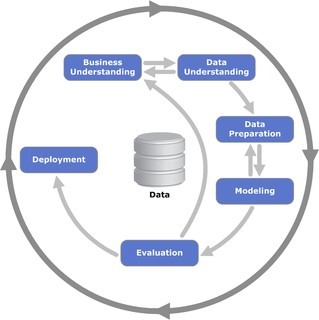
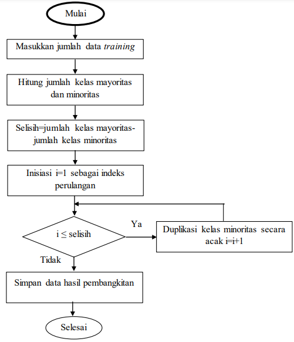

import matplotlib.pyplot as plt
import IPython
import numpy as np
import scipy.stats
import seaborn as sns
import pandas as pd
import os
from sklearn.preprocessing import MinMaxScaler
from sklearn.preprocessing import StandardScaler
import pickle
from sklearn.model_selection import train_test_split
from sklearn.metrics import accuracy_score
from sklearn.pipeline import Pipeline
from sklearn.model_selection import cross_validate
from sklearn.decomposition import PCA
from sklearn.ensemble import RandomForestClassifier
from sklearn.linear_model import LogisticRegression
# from keras.models import Sequential
# from keras.layers import Dense
from sklearn.tree import DecisionTreeClassifier
from sklearn.neighbors import KNeighborsClassifier
from sklearn.svm import SVC
from sklearn.ensemble import AdaBoostClassifier
from sklearn.naive_bayes import MultinomialNB
from sklearn.ensemble import RandomForestClassifier
from sklearn.ensemble import AdaBoostClassifier
from sklearn.feature_selection import mutual_info_classif
from sklearn.neighbors import LocalOutlierFactor
from imblearn.over_sampling import RandomOverSampler
from sklearn.preprocessing import RobustScaler
from collections import Counter
from sklearn.feature_selection import SelectKBest, f_classif
from sklearn.ensemble import RandomForestClassifier
from sklearn.metrics import accuracy_score
import joblib
from sklearn.preprocessing import RobustScaler1 BUSINESS UNDERSTANDING
**
| Nama | : | Mubessirul Ummah |
| NIM | : | 210411100140 |
| Kelas | : | Proyek Sains Data IF-5B |
Tahapan business understanding merupakan tahap awal dari sebuah proyek data analytics. Tahapan ini akan dapat menghasilkan perencanaan sebuah proyek data analytics yang jelas tujuannya dan pemahaman menyeluruh tentang proses bisnis, seperti membuat peta rute untuk memastikan rencana yang baik. Berikut Business Understanding dari proyek saya kali ini :
1.1 Determine Business Objectives (Menentukan Tujuan Bisnis)
Air merupakan salah satu sumber daya alam esensial untuk kelangsungan hidup seluruh makhluk hidup di dunia ini. Kita memerlukan air untuk kebutuhan kita sehari-hari, begitu juga dengan tanaman dan hewan yang memerlukan air untuk kelangsungan hidupnya. Menurut data dari World Health Organization (WHO), diperkirakan sebanyak 1.1 Miliar orang tidak memiliki akses untuk mendapatkan air yang layak minum dan 2.6 Miliar lainnya tidak mendapatkan fasilitas sanitasi yang baik. Pengolahan data ini bertujuan untuk menilai dan mengategorikan kualitas air sebagai “aman” atau “tidak aman” menggunakan teknik klasifikasi. Ini sejalan dengan tujuan lebih besar untuk memastikan air minum yang aman bagi masyarakat. Dalam pengolahan data kali ini akan dilakukan pencarian terhadap metode klasifikasi dan Apa fitur utama yang paling signifikan berkontribusi pada klasifikasi air sebagai aman atau tidak aman?
1.2 Access Situation (Menilai Situasi)
Setelah memahami dengan lebih spesifik tujuan bisnis terkait penilaian kualitas air, langkah berikutnya adalah melakukan assessment yang mencakup ketersediaan sumber daya, mitigasi risiko, dan terutama ketersediaan data kualitas air. Data mengenai kualitas air dapat bervariasi tergantung pada sumbernya, dan metode analitika data yang akan diterapkan akan sangat dipengaruhi oleh ketersediaan data tersebut. Dalam konteks kualitas air, pertanyaan yang muncul adalah, “Apa fitur utama yang paling signifikan berkontribusi pada klasifikasi air sebagai aman atau tidak aman?” Untuk menjawab pertanyaan ini, metode klasifikasi atau estimasi dapat diterapkan. Misalnya, algoritma machine learning seperti Random Forest atau Logistic Regression dapat digunakan untuk mengidentifikasi faktor-faktor utama yang membedakan air aman dan tidak aman.
1.3 Determine Data Mining Goals (Menentukan Tujuan Data Mining)
Tujuan Data Mining kali ini yakni untuk mengembangkan model klasifikasi yang dapat mengidentifikasi apakah suatu sampel air aman atau tidak aman berdasarkan parameter-parameter tertentu. Air minum yang layak konsumsi harus memenuhi beberapa kriteria, seperti tidak berwarna, tidak berbau, dan tidak mengandung zat berbahaya. Kriteria ini penting untuk diketahui agar terhindar dari masalah kesehatan akibat konsumsi air minum yang tidak layak. dalam menilai suatu air dikategorikan layak atau tidak layak di konsumsi jika berdasarkan kandungan zat yang ada di dalam air, maka berikut ini beberapa ciri atau kandungan air yang mempengaruhi kualitas air: 1. aluminium berbahaya jika lebih besar dari 2,8 2. ammonia berbahaya jika lebih besar dari 32,5 3. arsenic berbahaya jika lebih besar dari 0,01 4. barium berbahaya jika lebih besar dari 2 5. cadmium berbahaya jika lebih besar dari 0,005 6. chloramine berbahaya jika lebih besar dari 4 7. chromium berbahaya jika lebih besar dari 0,1 8. copper berbahaya jika lebih besar dari 1,3 9. flouride berbahaya jika lebih besar dari 1,5 10. bacteria berbahaya jika lebih besar dari 0 11. viruses berbahaya jika lebih besar dari 0 12. lead berbahaya jika lebih besar dari 0,015 13. nitrates berbahaya jika lebih besar dari 10 14. nitrites berbahaya jika lebih besar dari 1 15. mercury erbahaya jika lebih besar dari 0,002 16. perchlorate berbahaya jika lebih besar dari 56 17. radium berbahaya jika lebih besar dari 5 18. selenium berbahaya jika lebih besar dari 0,5 19. silver berbahaya jika lebih besar dari 0,1 20. uranium berbahaya jika lebih besar dari 0,3
Kemudian berdasarkan ciri-ciri di atas, suatu air bisa dikategorikan menjadi kelas 1 (safe atau aman) dan 0 (not safe atau tidak aman).
1.4 Produce Project Plan (Menghasilkan Rencana Proyek)
Langkah-langkah Proyek sebagai berikut :  - Menentukan bussiness understanding - Mengumpulkan dataset kualitas air yang mencakup informasi parameter-parameter yang sesuai. - Melakukan data understanding untuk memahami sebuah data sepert jumlahnya, daftar kolom, tipe data kolom, banayknya kelas, dan mengetahui data tersebut perlu atau tidak untuk dilakukan preprocessing. - Melakukan preprocessing terhadap dataset sebelum diterapkan teknik klasifikasi. - Membagi dataset menjadi set pelatihan (training set) dan set pengujian (testing set). - Menentukan teknik klasifikasi yang paling sesuai untuk proyek ini. - Mengembangkan, melatih, dan mengevaluasi model klasifikasi menggunakan set pelatihan. - Mengukur performa model menggunakan set pengujian. - Melakukan evaluasi terhadap model yang telah dikembangkan. - Mengimplementasikan model dalam aplikasi streamlit untuk mengetahui kualitas air.
2 DATA UNDERSTANDING
Data Understanding adalah tahap yang fokus pada eksplorasi dan pemahaman awal terhadap data yang akan digunakan dalam suatu proyek analisis data. Tahap ini merupakan langkah untuk memahami karakteristik, struktur, dan konten atau isi dari data sebelum melakukan analisis lebih lanjut. data understanding dipakai untuk memeriksa data sehingga dapat mengidentifikasi masalah pada data yang kita dapatkan.
2.1 Deskripsi Dataset
Datasest waterquality merupakan kumpulan data yang dibuat dari data imajiner kualitas air di lingkungan perkotaan. Dataset ini mencakup data kadar mikroorganisme yang terkandung di dalam air seperti kadar aluminium, ammonia, arsenic, barium, cadmium, chloramine, chromium, copper, flouride, bacteria, viruses, lead, nitrates, nitrites, mercury, perchlorate, radium, selenium, silver, dan uranium. Data tersebut berisi 21 atribut dan 7999 record, record tersebut diberi label dengan variabel kelas is_safe, yang memungkinkan klasifikasi data menggunakan nilai 1 (safe atau aman) dan 0 (not_safe atau tidak aman) dikonsumsi. data ini saya dapatkan dari Kaggel dengan link berikut : https://www.kaggle.com/datasets/mssmartypants/water-quality/.
dataset tersebut berisi “synthetic water quality data” atau “simulated water quality data” atau dengan kata lain sample dari data yang bersifat fiktif atau imajiner yang dibuat untuk keperluan pendidikan dan latihan.
# Membaca data dari file csv
df = pd.read_csv('waterQuality1.csv')
df| aluminium | ammonia | arsenic | barium | cadmium | chloramine | chromium | copper | flouride | bacteria | ... | lead | nitrates | nitrites | mercury | perchlorate | radium | selenium | silver | uranium | is_safe | |
|---|---|---|---|---|---|---|---|---|---|---|---|---|---|---|---|---|---|---|---|---|---|
| 0 | 1.65 | 9.08 | 0.04 | 2.85 | 0.007 | 0.35 | 0.83 | 0.17 | 0.05 | 0.20 | ... | 0.054 | 16.08 | 1.13 | 0.007 | 37.75 | 6.78 | 0.08 | 0.34 | 0.02 | 1 |
| 1 | 2.32 | 21.16 | 0.01 | 3.31 | 0.002 | 5.28 | 0.68 | 0.66 | 0.90 | 0.65 | ... | 0.100 | 2.01 | 1.93 | 0.003 | 32.26 | 3.21 | 0.08 | 0.27 | 0.05 | 1 |
| 2 | 1.01 | 14.02 | 0.04 | 0.58 | 0.008 | 4.24 | 0.53 | 0.02 | 0.99 | 0.05 | ... | 0.078 | 14.16 | 1.11 | 0.006 | 50.28 | 7.07 | 0.07 | 0.44 | 0.01 | 0 |
| 3 | 1.36 | 11.33 | 0.04 | 2.96 | 0.001 | 7.23 | 0.03 | 1.66 | 1.08 | 0.71 | ... | 0.016 | 1.41 | 1.29 | 0.004 | 9.12 | 1.72 | 0.02 | 0.45 | 0.05 | 1 |
| 4 | 0.92 | 24.33 | 0.03 | 0.20 | 0.006 | 2.67 | 0.69 | 0.57 | 0.61 | 0.13 | ... | 0.117 | 6.74 | 1.11 | 0.003 | 16.90 | 2.41 | 0.02 | 0.06 | 0.02 | 1 |
| ... | ... | ... | ... | ... | ... | ... | ... | ... | ... | ... | ... | ... | ... | ... | ... | ... | ... | ... | ... | ... | ... |
| 7994 | 0.05 | 7.78 | 0.00 | 1.95 | 0.040 | 0.10 | 0.03 | 0.03 | 1.37 | 0.00 | ... | 0.197 | 14.29 | 1.00 | 0.005 | 3.57 | 2.13 | 0.09 | 0.06 | 0.03 | 1 |
| 7995 | 0.05 | 24.22 | 0.02 | 0.59 | 0.010 | 0.45 | 0.02 | 0.02 | 1.48 | 0.00 | ... | 0.031 | 10.27 | 1.00 | 0.001 | 1.48 | 1.11 | 0.09 | 0.10 | 0.08 | 1 |
| 7996 | 0.09 | 6.85 | 0.00 | 0.61 | 0.030 | 0.05 | 0.05 | 0.02 | 0.91 | 0.00 | ... | 0.182 | 15.92 | 1.00 | 0.000 | 1.35 | 4.84 | 0.00 | 0.04 | 0.05 | 1 |
| 7997 | 0.01 | 10 | 0.01 | 2.00 | 0.000 | 2.00 | 0.00 | 0.09 | 0.00 | 0.00 | ... | 0.000 | 0.00 | 0.00 | 0.000 | 0.00 | 0.00 | 0.00 | 0.00 | 0.00 | 1 |
| 7998 | 0.04 | 6.85 | 0.01 | 0.70 | 0.030 | 0.05 | 0.01 | 0.03 | 1.00 | 0.00 | ... | 0.182 | 15.92 | 1.00 | 0.000 | 1.35 | 4.84 | 0.00 | 0.04 | 0.05 | 1 |
7999 rows × 21 columns
Kode di atas digunakan untuk membuka file csv dan menampilkan visual isi dari dataset.
print("Banyaknya data : ", df.shape[0])
print("Banyaknya kolom : ", df.shape[1])Banyaknya data : 7999
Banyaknya kolom : 21fungs shape sendiri digunakan untuk mengetahui dimensi dari dataframe atau ukuran baris dan kolomnya. df.shape[0]: Ini mencetak jumlah baris (data points) dalam DataFrame df. Dalam hal ini, jumlah barisnya adalah 7999. df.shape[1]: Ini mencetak jumlah kolom (fitur atau variabel) dalam DataFrame df. Dalam hal ini, jumlah kolomnya adalah 21. Dengan kata lain, DataFrame Anda memiliki 7999 baris dan 21 kolom.
2.2 Deskripsi Fitur Dataset
- Aluminium : Merupakan kandungan aluminium dalam air. berbahaya jika lebih besar dari 2,8. kandungan aluminium yang berlebihan dapat menyebabkan masalah kesehatan, terutama pada sistem saraf.
- Ammonia : Kandungan ammonia (NH3) dalam air. Amonia adalah gas dengan bau yang tajam dan beracun dalam konsentrasi tinggi. berbahaya jika lebih besar dari 32,5. Kandungan ammonia yang tinggi dalam air dapat menyebabkan kerusakan organisme akuatik dan merusak kualitas air minum.
- Arsenic : Kandungan arsenik dalam air. Arsenic adalah unsur kimia dalam tabel periodik dengan simbol As dan nomor atom 33. Arsenic dapat ditemukan secara alami di dalam kerak bumi dan digunakan dalam berbagai aplikasi industri, termasuk pembuatan kayu tahan air. arsenic berbahaya jika lebih besar dari 0,01. Kandungan arsenik yang tinggi dalam air minum dapat menyebabkan keracunan dan meningkatkan risiko kanker.
- Barium: Kandungan barium dalam air. Barium adalah unsur kimia dengan simbol Ba dan nomor atom 56. Barium digunakan dalam industri minyak dan gas, serta dalam radiografi medis. berbahaya jika lebih besar dari 2. Pemaparan jangka panjang terhadap barium dapat menyebabkan kerusakan organ dalam tubuh manusia.
- Cadmium : Kandungan kadmium dalam air. Cadmium adalah unsur kimia dengan simbol Cd dan nomor atom 48. Cadmium digunakan dalam baterai, cat, dan plastik. berbahaya jika lebih besar dari 0,005. Pemaparan cadmium dapat menyebabkan masalah kesehatan serius, termasuk kerusakan ginjal dan kanker.
- Chloramine : Kandungan chloramine dalam air. Chloramine adalah senyawa kimia yang terbentuk dari klorin dan amonia. Ini digunakan sebagai desinfektan dalam air minum. berbahaya jika lebih besar dari 4. Paparan kloramine dalam jumlah yang tinggi dapat menyebabkan iritasi mata dan tenggorokan.
- Chromium : Kandungan kromium dalam air. berbahaya jika lebih besar dari 0,1. Pemaparan kromium VI dapat menyebabkan kerusakan paru-paru, penyakit pernapasan, dan kanker.
- Copper : Kandungan tembaga dalam air. Copper adalah unsur kimia dengan simbol Cu dan nomor atom 29. Copper digunakan dalam instalasi listrik, pipa, dan peralatan masak. berbahaya jika lebih besar dari 1,3. Kandungan tembaga yang berlebihan dalam air minum dapat menyebabkan gangguan pencernaan dan masalah hati.
- Fluoride : Kandungan fluoride dalam air. Fluoride adalah ion anorganik yang penting untuk kesehatan gigi. berbahaya jika lebih besar dari 1,5. konsumsi fluoride dalam jumlah yang berlebihan dapat menyebabkan masalah kesehatan gigi dan tulang.
- Bacteria : Indikator keberadaan bakteri dalam air. Bakteri adalah mikroorganisme yang dapat ditemukan dalam air. berbahaya jika lebih besar dari 0.
- Viruses : Indikator keberadaan virus dalam air. berbahaya jika lebih besar dari 0
- Lead : Kandungan timbal dalam air. Lead adalah logam berat yang dapat menyebabkan keracunan, terutama pada anak-anak. berbahaya jika lebih besar dari 0,015. Pemaparan timbal dapat menyebabkan kerusakan otak dan sistem saraf.
- Nitrates : Kandungan nitrat dalam air. Nitrates adalah senyawa kimia yang dapat ditemukan dalam pupuk dan limbah industriberbahaya jika lebih besar dari 10. Kandungan nitrates yang tinggi dalam air dapat menyebabkan masalah kesehatan, terutama pada bayi.
- Nitrites : Kandungan nitrit dalam air. nitrites adalah senyawa kimia yang dapat ditemukan dalam pupuk dan limbah industriberbahaya jika lebih besar dari 1. Kandungan nitrites yang tinggi dalam air dapat menyebabkan masalah kesehatan, terutama pada bayi.
- Mercury : Kandungan merkuri dalam air. Mercury adalah logam berat yang dapat mengakumulasi dalam organisme hidup dan menyebabkan keracunan. berbahaya jika lebih besar dari 0,002. Pemaparan merkuri dapat merusak otak, ginjal, dan sistem saraf.
- Perchlorate : Kandungan perchlorate dalam air. Perchlorate adalah senyawa kimia yang digunakan dalam bahan peledak dan propelan roket. Pemaparan perchlorate dapat mengganggu fungsi tiroid. berbahaya jika lebih besar dari 56
- Radium : Kandungan radium dalam air. Radium adalah unsur radioaktif yang dapat ditemukan secara alami dalam tanah dan air. Paparan radium dapat meningkatkan risiko kanker. berbahaya jika lebih besar dari 5
- Selenium : Kandungan selenium dalam air. berbahaya jika lebih besar dari 0,5. konsumsi selenium yang berlebihan dapat menyebabkan masalah kesehatan, termasuk kerusakan saraf.
- Silver : Kandungan perak dalam air. berbahaya jika lebih besar dari 0,1. Konsumsi perak dalam jumlah yang berlebihan dapat menyebabkan argyria, kondisi di mana kulit manusia berubah menjadi warna biru keabu-abuan.
- Uranium : Kandungan uranium dalam air. Uranium adalah unsur radioaktif yang dapat ditemukan secara alami dalam batuan dan air. Paparan uranium dapat meningkatkan risiko kanker dan masalah ginjal. berbahaya jika lebih besar dari 0,3
- Is_safe : Kolom ini adalah label atau target variabel yang menunjukkan apakah sampel air tersebut aman untuk dikonsumsi atau tidak. class attribute {0 - not safe, 1 - safe}
fitur di atas ini mencerminkan kandungan berbagai mikroorganisme dalam air. Dalam setiap fitur atau kandungan yang ada dalam air tersebut memiliki batasan aman. jika kandungan mikroorganisme melebihi nilai-nilai batasan ini, air dianggap tidak aman untuk konsumsi manusia.
df.columnsIndex(['aluminium', 'ammonia', 'arsenic', 'barium', 'cadmium', 'chloramine',
'chromium', 'copper', 'flouride', 'bacteria', 'viruses', 'lead',
'nitrates', 'nitrites', 'mercury', 'perchlorate', 'radium', 'selenium',
'silver', 'uranium', 'is_safe'],
dtype='object')fungsi columns digunakan untuk menampilkan nama-nama kolom pada dataframe. yang mana dataset water quality ini terdiri dari 21 kolom, yakni aluminium, ammonia, arsenic, barium, cadmium, chloramine, chromium, copper, flouride, bacteria, viruses, lead, nitrates, nitrites, mercury, perchlorate, radium, selenium, silver, uranium, dan is_safe.
df.describe()| aluminium | arsenic | barium | cadmium | chloramine | chromium | copper | flouride | bacteria | viruses | lead | nitrates | nitrites | mercury | perchlorate | radium | selenium | silver | uranium | |
|---|---|---|---|---|---|---|---|---|---|---|---|---|---|---|---|---|---|---|---|
| count | 7999.000000 | 7999.000000 | 7999.000000 | 7999.000000 | 7999.000000 | 7999.000000 | 7999.000000 | 7999.000000 | 7999.000000 | 7999.000000 | 7999.000000 | 7999.000000 | 7999.000000 | 7999.000000 | 7999.000000 | 7999.000000 | 7999.000000 | 7999.000000 | 7999.000000 |
| mean | 0.666158 | 0.161445 | 1.567715 | 0.042806 | 2.176831 | 0.247226 | 0.805857 | 0.771565 | 0.319665 | 0.328583 | 0.099450 | 9.818822 | 1.329961 | 0.005194 | 16.460299 | 2.920548 | 0.049685 | 0.147781 | 0.044673 |
| std | 1.265145 | 0.252590 | 1.216091 | 0.036049 | 2.567027 | 0.270640 | 0.653539 | 0.435373 | 0.329485 | 0.378096 | 0.058172 | 5.541331 | 0.573219 | 0.002967 | 17.687474 | 2.323009 | 0.028770 | 0.143551 | 0.026904 |
| min | 0.000000 | 0.000000 | 0.000000 | 0.000000 | 0.000000 | 0.000000 | 0.000000 | 0.000000 | 0.000000 | 0.000000 | 0.000000 | 0.000000 | 0.000000 | 0.000000 | 0.000000 | 0.000000 | 0.000000 | 0.000000 | 0.000000 |
| 25% | 0.040000 | 0.030000 | 0.560000 | 0.008000 | 0.100000 | 0.050000 | 0.090000 | 0.405000 | 0.000000 | 0.002000 | 0.048000 | 5.000000 | 1.000000 | 0.003000 | 2.170000 | 0.820000 | 0.020000 | 0.040000 | 0.020000 |
| 50% | 0.070000 | 0.050000 | 1.190000 | 0.040000 | 0.530000 | 0.090000 | 0.750000 | 0.770000 | 0.220000 | 0.008000 | 0.102000 | 9.930000 | 1.420000 | 0.005000 | 7.740000 | 2.410000 | 0.050000 | 0.080000 | 0.050000 |
| 75% | 0.280000 | 0.100000 | 2.480000 | 0.070000 | 4.240000 | 0.440000 | 1.390000 | 1.160000 | 0.610000 | 0.700000 | 0.151000 | 14.610000 | 1.760000 | 0.008000 | 29.480000 | 4.670000 | 0.070000 | 0.240000 | 0.070000 |
| max | 5.050000 | 1.050000 | 4.940000 | 0.130000 | 8.680000 | 0.900000 | 2.000000 | 1.500000 | 1.000000 | 1.000000 | 0.200000 | 19.830000 | 2.930000 | 0.010000 | 60.010000 | 7.990000 | 0.100000 | 0.500000 | 0.090000 |
Fungsi describe() digunakan untuk menampilkan statistik deskriptif dari data frame atau series. Output dari fungsi ini berisi rangkuman central tendency dan sebaran dari dataset. Fungsi describe() membantu kita untuk mendapatkan overview dari dataset. Di bawah ini adalah penjelasan hasil yang diberikan:
Count (Jumlah): Menunjukkan jumlah data yang ada dalam setiap kolom. Misalnya, pada kolom “aluminium”, terdapat 7999 data.
Mean (Rata-rata): Menunjukkan nilai rata-rata dari setiap kolom. Misalnya, rata-rata kandungan aluminium adalah sekitar 0.666158.
Std (Standar Deviasi): Menunjukkan sejauh mana nilai-nilai dalam kolom tersebar dari rata-rata. Semakin tinggi standar deviasi, semakin besar variabilitasnya dari rata-rata. Misalnya, standar deviasi kandungan aluminium adalah sekitar 1.265145.
Min (Minimum): Menunjukkan nilai terkecil dalam setiap kolom. Misalnya, nilai minimum kandungan arsenik adalah 0.0.
25% (Kuartil Pertama): Menunjukkan nilai yang membagi 25% data terendah dari nilai-nilai lainnya. Misalnya, pada kolom “aluminium”, 25% data berada di bawah 0.040000.
50% (Median atau Kuartil Kedua): Menunjukkan nilai yang membagi dataset menjadi dua bagian setara, atau median. Misalnya, median kandungan aluminium adalah 0.070000.
75% (Kuartil Ketiga): Menunjukkan nilai yang membagi 75% data terendah dari nilai-nilai lainnya. Misalnya, pada kolom “aluminium”, 75% data berada di bawah 0.280000.
Max (Maksimum): Menunjukkan nilai tertinggi dalam setiap kolom. Misalnya, nilai maksimum kandungan aluminium adalah 5.050000.
2.3 Deskripsi Tipe Data Fitur
Berikut adalah analisis tipe data untuk setiap kolom beserta alasannya:
aluminium: Tipe data rasio. Kandungan aluminium dalam air memiliki nol yang bermakna, dan perbandingan antara dua nilai memiliki arti yang jelas (misalnya, 2 kali lipat).
ammonia: Tipe data rasio. Kandungan ammonia dalam air juga memiliki nol yang bermakna dan perbandingan antara dua nilai memiliki arti yang jelas.
arsenic: Tipe data rasio. Kandungan arsenik dalam air memiliki nol yang bermakna dan perbandingan antara dua nilai memiliki arti yang jelas.
barium: Tipe data rasio. Kandungan barium dalam air memiliki nol yang bermakna dan perbandingan antara dua nilai memiliki arti yang jelas.
cadmium: Tipe data rasio. Kandungan cadmium dalam air memiliki nol yang bermakna dan perbandingan antara dua nilai memiliki arti yang jelas.
chloramine: Tipe data rasio. Kandungan chloramine dalam air memiliki nol yang bermakna dan perbandingan antara dua nilai memiliki arti yang jelas.
chromium: Tipe data rasio. Kandungan chromium dalam air memiliki nol yang bermakna dan perbandingan antara dua nilai memiliki arti yang jelas.
copper: Tipe data rasio. Kandungan copper dalam air memiliki nol yang bermakna dan perbandingan antara dua nilai memiliki arti yang jelas.
flouride: Tipe data rasio. Kandungan flouride dalam air memiliki nol yang bermakna dan perbandingan antara dua nilai memiliki arti yang jelas.
bacteria: Tipe data rasio. Kandungan bakteri dalam air memiliki nol yang bermakna dan perbandingan antara dua nilai memiliki arti yang jelas.
viruses: Tipe data rasio. Kandungan virus dalam air memiliki nol yang bermakna dan perbandingan antara dua nilai memiliki arti yang jelas.
lead: Tipe data rasio. Kandungan lead dalam air memiliki nol yang bermakna dan perbandingan antara dua nilai memiliki arti yang jelas.
nitrates: Tipe data rasio. Kandungan nitrates dalam air memiliki nol yang bermakna dan perbandingan antara dua nilai memiliki arti yang jelas.
nitrites: Tipe data rasio. Kandungan nitrites dalam air memiliki nol yang bermakna dan perbandingan antara dua nilai memiliki arti yang jelas.
mercury: Tipe data rasio. Kandungan mercury dalam air memiliki nol yang bermakna dan perbandingan antara dua nilai memiliki arti yang jelas.
perchlorate: Tipe data rasio. Kandungan perchlorate dalam air memiliki nol yang bermakna dan perbandingan antara dua nilai memiliki arti yang jelas.
radium: Tipe data rasio. Kandungan radium dalam air memiliki nol yang bermakna dan perbandingan antara dua nilai memiliki arti yang jelas.
selenium: Tipe data rasio. Kandungan selenium dalam air memiliki nol yang bermakna dan perbandingan antara dua nilai memiliki arti yang jelas.
silver: Tipe data rasio. Kandungan silver dalam air memiliki nol yang bermakna dan perbandingan antara dua nilai memiliki arti yang jelas.
uranium: Tipe data rasio. Kandungan uranium dalam air memiliki nol yang bermakna dan perbandingan antara dua nilai memiliki arti yang jelas.
is_safe: Tipe data nominal. Variabel target ini merupakan label kategori yang menunjukkan apakah air layak diminum atau tidak. Ini merupakan tipe data kategorikal dengan dua kategori yang bersifat nominal.
2.4 Identifikasi Missing Value
(Dataset ini memiliki 3 missing value pada kolom amonia dan is_safe) penjelasannya sebagai berikut :
Identifikasi missing value adalah proses mengenali dan menentukan lokasi di mana nilai-nilai yang hilang (missing value) terdapat dalam dataset. untuk mencari missing value kita bisa menggunakan fungsi info(). Fungsi info() digunakan untuk menampilkan informasi detail tentang dataframe, seperti jumlah baris data, nama-nama kolom berserta jumlah data dan tipe datanya, dan sebagainya. Dimana didapat bahwa dataset tersebut nampaknya tidak memiliki nilai yang missing karena nilai non-null setiap kolomnya sebanyak 7999 sama dengan jumlah dataset sebenarnya. akan tetapi perlu di telisik lebih dalam karena bisa jadi valuenya terdapat kerusakan seperti yang awalnya berupa angka, akan tetapi berubah menjadi stringg atau object, dimana itu terdeteksi pada kolom amonia dan is_safe.
df.info()<class 'pandas.core.frame.DataFrame'>
RangeIndex: 7999 entries, 0 to 7998
Data columns (total 21 columns):
# Column Non-Null Count Dtype
--- ------ -------------- -----
0 aluminium 7999 non-null float64
1 ammonia 7999 non-null object
2 arsenic 7999 non-null float64
3 barium 7999 non-null float64
4 cadmium 7999 non-null float64
5 chloramine 7999 non-null float64
6 chromium 7999 non-null float64
7 copper 7999 non-null float64
8 flouride 7999 non-null float64
9 bacteria 7999 non-null float64
10 viruses 7999 non-null float64
11 lead 7999 non-null float64
12 nitrates 7999 non-null float64
13 nitrites 7999 non-null float64
14 mercury 7999 non-null float64
15 perchlorate 7999 non-null float64
16 radium 7999 non-null float64
17 selenium 7999 non-null float64
18 silver 7999 non-null float64
19 uranium 7999 non-null float64
20 is_safe 7999 non-null object
dtypes: float64(19), object(2)
memory usage: 1.3+ MBKita akan mengecek apakah sebuah data mengandung Pesan “#NUM!”. #NUM! mungkin muncul karena adanya kesalahan atau format yang tidak tepat dalam dataset, terutama pada kolom yang seharusnya berisi nilai numerik. Tanda ini seringkali menunjukkan bahwa suatu sel atau entri dalam dataset tidak dapat diuraikan sebagai nilai numerik yang valid.
# Menghitung apakah ada nilai '#NUM!' dalam setiap kolom
contains_num = df.eq('#NUM!')
# Menampilkan hasil
print("Apakah ada nilai '#NUM!' dalam setiap kolom:")
print(contains_num.any())
# Menghitung jumlah nilai '#NUM!' untuk setiap kolom
num_count_per_column = contains_num.sum()
print("Jumlah nilai '#NUM!' untuk setiap kolom:")
print(num_count_per_column)Apakah ada nilai '#NUM!' dalam setiap kolom:
aluminium False
ammonia True
arsenic False
barium False
cadmium False
chloramine False
chromium False
copper False
flouride False
bacteria False
viruses False
lead False
nitrates False
nitrites False
mercury False
perchlorate False
radium False
selenium False
silver False
uranium False
is_safe True
dtype: bool
Jumlah nilai '#NUM!' untuk setiap kolom:
aluminium 0
ammonia 3
arsenic 0
barium 0
cadmium 0
chloramine 0
chromium 0
copper 0
flouride 0
bacteria 0
viruses 0
lead 0
nitrates 0
nitrites 0
mercury 0
perchlorate 0
radium 0
selenium 0
silver 0
uranium 0
is_safe 3
dtype: int64Kode di atas ini digunakan untuk mengakumulasi dengan melakukan pengecekan apakah terdapat nilai yang hilang (NaN) dalam kolom yang ada dalam DataFrame (df). - Fungsi eq (singkatan dari “equal”) pada Pandas digunakan untuk membandingkan elemen-elemen dalam suatu DataFrame atau Series dengan nilai tertentu dan mengembalikan DataFrame atau Series baru yang berisi nilai True jika elemennya sama dengan nilai yang dibandingkan, dan False jika tidak. - Fungsi any() fungsi any() pada Pandas digunakan untuk menentukan apakah setidaknya satu elemen dalam suatu DataFrame atau Series memiliki nilai True. Jika ada setidaknya satu nilai True, maka fungsi any() akan mengembalikan True; sebaliknya, jika semua nilai adalah False, maka akan mengembalikan False. - fungsi sum() fungsi sum() pada pandas digunakan untuk menjumlahkan suatu data, dimana fungsi ini digunakan untuk menghitung jumlah nilai True (jumlah nilai ‘#NUM!’) dalam setiap kolom dan menyimpannya dalam suatu variable untuk kemudian ditampilkan.
Berdasarkan identifikasi lebih dalam maka didapati nilai yang hilang berupa #NUM! Dalam dataset water quality ini memiliki 3 missing value pada kolom amonia dan is_safe.
2.5 Identifikasi Data Duplicated
Identifikasi data duplikat merujuk pada proses menemukan dan menandai baris atau entri dalam dataset yang memiliki nilai yang sama di semua kolomnya. Dengan kata lain, data duplikat adalah duplikat persis dari baris lainnya dalam dataset. Dalam dataset water Quality ini tidak ditemukannya data duplikat.
jumlah_duplikat = df.duplicated().sum()
# Menampilkan jumlah data yang duplikat
print("Jumlah data yang duplikat:", jumlah_duplikat)Jumlah data yang duplikat: 0Kode diatas yakni digunakan untuk mengidentifikasi dan menghitung jumlah data duplikat dalam DataFrame (df). Menggunakan metode duplicated() untuk menghasilkan keterangan boolean yang menunjukkan apakah setiap baris dalam DataFrame adalah duplikat dari baris sebelumnya atau tidak (True atau False). Kemudian, metode sum() digunakan untuk menghitung jumlah total nilai True, yang merupakan jumlah total data duplikat. Dalam dataset saya, tidak ada data yang mengalami duplikasi data.
Contoh deteksi duplikat data : | A | B | |—|——–| | 1 | apple | | 2 | banana | | 3 | apple | | 2 | banana | | 4 | orange |
Baris-baris yang merupakan duplikat: - 0 False - 1 False - 2 False - 3 True - 4 False
2.6 Identifikasi Sebaran Kelas Data
identifikasi ini digunakan untuk melihat sejauh mana perbedaan jumlah kedua kelas yakni kelas 0 atau tidak aman, dan kelas 1 atau aman. Dalam dataset Water Quality ini mengalamni unbalance data, dimana terdapat perbedaan yang cukup signifikan dalam jumlah data tiap kelasnya. Data dengan kelas 0 atau tidak aman berjumlah 7084 berbanding cukup jauh dengan data dengan kelas 1 yang hanya berkisar 912 data saja. Oleh karena itu, perlu dilakukan pre-processing untuk menyamaratakan jumlah data setiap kelasnya.
Menurut He dan Edwardo (2009) sebuah himpunan data dikatakan imbalanced jika terdapat salah satu kelas yang direpresentasikan dalam jumlah yang tidak sebanding dengan kelas yang lain. Kondisi imbalanced data menjadi masalah dalam klasifikasi karena classifier learning akan condong memprediksi ke kelas data yang banyak (mayoritas) dibanding dengan kelas yang sedikit (minoritas). Akibatnya, dihasilkan akurasi prediksi yang baik terhadap kelas data training yang banyak (kelas mayoritas) sedangkan untuk kelas data training yang sedikit (kelas minoritas) akan dihasilkan akurasi prediksi yang buruk.
Imbalanced data dapat diatasi dengan beberapa cara, antara lain dengan pengambilan sampel pada setiap kelas dan strategi sampling seperti oversampling atau undersampling.
df = pd.read_csv('waterQuality1.csv')print(df['is_safe'].unique())
print(df.is_safe.value_counts())['1' '0' '#NUM!']
0 7084
1 912
#NUM! 3
Name: is_safe, dtype: int64import seaborn as sns
import matplotlib.pyplot as plt
# Menggunakan seaborn untuk membuat countplot
sns.set(style="whitegrid")
ax = sns.countplot(data=df, x='is_safe')
# Menambahkan label pada sumbu y
plt.ylabel('Jumlah Data')
# Menambahkan judul plot
plt.title('Distribusi Kelas')
# Menampilkan jumlah data untuk masing-masing kelas di atas batangnya
for p in ax.patches:
ax.annotate(f'{p.get_height()}', (p.get_x() + p.get_width() / 2., p.get_height()),
ha='center', va='center', xytext=(0, 10), textcoords='offset points')
# Menampilkan plot
plt.show()
Kode diatas menggunakan seaborn dan matplotlib untuk membuat countplot dari kolom ‘is_safe’ dalam DataFrame df. Hasilnya adalah visualisasi distribusi kelas ‘is_safe’ dengan jumlah data di setiap kategori.
2.7 Identifikasi Outlier
Identifikasi Outlier kali ini menggunakan Metode Local Outlier Factor. Local Outlier Factor (LOF) adalah metode yang digunakan untuk mendeteksi outlier dalam dataset. Data dalam dataset water quality yang mengalami outlier adalah sebanyak 1999 data.
Metode Local Outlier Factor (LOF) membandingkan kerapatan suatu titik data dengan kerapatan titik-titik di sekitarnya. LOF mengukur sejauh mana suatu titik data dianggap anomali atau outlier berdasarkan perbedaan kerapatan. Metode ini dikembangkan oleh Markus M. Breunig, Hans-Peter Kriegel, Raymond T. Ng, dan Jörg Sander pada tahun 2000. Sumber
Berikut adalah langkah-langkah Local Outlier Factor (LOF): 1. Hitung jarak antar titik dan tetangga - Rumus jarak euclidean antara dua titik p dan 1 dalam dimensi n: \[\begin{equation} \text{Euclidean Distance} (P, Q) = \sqrt{\sum_{i=1}^{n} (q_i - p_i)^2} \end{equation}\] \[\begin{equation} \text{Euclidean Distance} (P, Q) = \sqrt{(q_1 - p_1)^2 + (q_2 - p_2)^2} \end{equation}\]
- Hitung kepadatan lokasi
- Kepadatan lokal suatu titik p: \[\begin{equation} \text{Density}_p = \frac{1}{{\text{k-th distance}_p}} \end{equation}\] \[\begin{equation} {{\text{Dimana k-th distance adalah jarak ke titik tetangga ke-k}_p}} \end{equation}\]
- Hitung Local Reachability Density (LRD)
- Local Reachability Density (LRD) suatu titik p: \[\begin{equation} \text{LRD}_p = \left(\text{Density}_p\right)^{\frac{1}{\alpha}} \end{equation}\] di mana α adalah parameter untuk menyesuaikan sensitivitas terhadap fluktuasi kecil dalam kepadatan.
- Hitung Local Outlier Factor (LOF)
- Local Outlier Factor (LOF) suatu titik p: \[\begin{equation} \text{LOF}_p = \frac{\left|\text{Neighbors}_p\right|}{\sum_{o \in \text{Neighbors}_p} \frac{\text{LRD}_o}{\text{LRD}_p}} \end{equation}\] di mana Neighborsp adalah himpunan tetangga dari titik p.
- Identifikasi Outlier: Tentukan threshold, dan labeli titik-titik yang memiliki LOF di atas threshold sebagai outlier. Pada umumnya, jika LOF(p) > Threshold, maka titik p dianggap sebagai outlier.
df = pd.read_csv('waterQuality1.csv')import pandas as pd
from sklearn.neighbors import LocalOutlierFactor
# Mengganti '#NUM!' dengan NaN dan mengonversi kolom ke tipe float
df.replace('#NUM!', float('nan'), inplace=True)
df = df.apply(pd.to_numeric, errors='coerce')
# Filter DataFrame untuk nilai yang bukan NaN (numerik)
df_numeric = df.dropna()
# Contamination values yang ingin diuji
contamination_values = [0.05, 0.1, 0.15, 0.2, 0.25]
# Inisialisasi variabel untuk menyimpan hasil terbaik
max_outliers = 0
best_params = {'n_neighbors': None, 'contamination': None}
# Loop untuk nilai n_neighbors dari 1 hingga 50
for n_neighbors in range(1, 51):
for contamination in contamination_values:
lof = LocalOutlierFactor(n_neighbors=n_neighbors, contamination=contamination)
outlier_labels = lof.fit_predict(df_numeric)
num_outliers = sum(outlier_labels == -1) # Menghitung jumlah outlier yang dideteksi
# Memperbarui hasil terbaik jika ditemukan jumlah outlier yang lebih banyak
if num_outliers > max_outliers:
max_outliers = num_outliers
best_params['n_neighbors'] = n_neighbors
best_params['contamination'] = contamination
# Mencetak hasil terbaik
print("Parameter terbaik:")
print("Jumlah data outlier :", max_outliers)
print("Jumlah data tanpa outlier :", (df.shape[0])-max_outliers)
print("n_neighbors =", best_params['n_neighbors'])
print("contamination =", best_params['contamination'])C:\Users\Lenovo\anaconda3\Lib\site-packages\joblib\externals\loky\backend\context.py:136: UserWarning: Could not find the number of physical cores for the following reason:
found 0 physical cores < 1
Returning the number of logical cores instead. You can silence this warning by setting LOKY_MAX_CPU_COUNT to the number of cores you want to use.
warnings.warn(
File "C:\Users\Lenovo\anaconda3\Lib\site-packages\joblib\externals\loky\backend\context.py", line 282, in _count_physical_cores
raise ValueError(f"found {cpu_count_physical} physical cores < 1")Parameter terbaik:
Jumlah data outlier : 1999
Jumlah data tanpa outlier : 6000
n_neighbors = 1
contamination = 0.25Pada kode di atas, saya menerapkan grid search untuk mencari parameter yang bagus guna mendeteksi outlier, dimana parameter yang terpilih yakni dengan n_neighbors 1 dan contaminationsnya 0,25
2.8 Eksplorasi Data
Pada eksplorasi data kali ini saya akan menampilkan data ke dalam bentuk grafik-grafik seperti histogram, dan matrix. Visualisasi ini agar memudahkan untuk mengambil informasi penting dari sebuah data.
# Membaca data dari file csv
df = pd.read_csv('waterQuality1.csv')2.8.1 Histogram Sebaran Frekuensi Data Setiap Kolom
#distribution data
df.hist(figsize=(14, 14))
plt.show()
Kode diatas bertujuan untuk memberikan visualisasi distribusi data dari dataframe df menggunakan histogram. Histogram adalah grafik yang membagi rentang data ke dalam interval dan menghitung jumlah data yang jatuh dalam setiap interval tersebut. Ini membantu untuk memahami pola distribusi data dan melihat sebaran nilai-nilai dalam dataset.
sns.set(style='whitegrid')
# Plot histograms for the distribution of all columns
plt.figure(figsize=(12, 15))
data_columns = df.columns.tolist()
data_columns.remove('is_safe')
# Adjust the number of rows and columns in the subplot grid for better visualization
num_rows = len(data_columns) // 2 + len(data_columns) % 2
num_cols = 2
for i, column in enumerate(data_columns):
plt.subplot(num_rows, num_cols, i + 1)
sns.histplot(df[column], kde=True, color='orange', bins=40)
plt.title(f'Distribusi kolom {column}', fontsize=12)
plt.xlabel('')
plt.ylabel('Kepadatan')
plt.suptitle("Distribusi Data")
plt.tight_layout()
plt.show()
Kode di atas mengatur gaya plot, kemudian memplot histogram untuk distribusi semua kolom pada DataFrame. Setiap subplot menunjukkan distribusi nilai dari satu kolom, dan garis halus (kernel density estimation) ditambahkan untuk memberikan representasi kepadatan distribusi data.
2.8.2 Matrix Korelasi
Kode berikut dibawah ini menghasilkan sebuah matriks korelasi dengan menggunakan fungsi corr() dari pandas pada DataFrame df. Matriks korelasi ini merepresentasikan hubungan linier antara semua pasangan variabel dalam dataset. Setiap sel dalam matriks menunjukkan nilai korelasi antara dua variabel.
correlation_matrix = df.corr()
plt.figure(figsize=(16, 15))
sns.heatmap(correlation_matrix, annot=True, cmap='coolwarm', center=0, vmin=-1, vmax=1)
plt.title("Correlation Plot of Water Quality Parameters")
plt.show()C:\Users\Lenovo\AppData\Local\Temp\ipykernel_13180\1987230932.py:1: FutureWarning: The default value of numeric_only in DataFrame.corr is deprecated. In a future version, it will default to False. Select only valid columns or specify the value of numeric_only to silence this warning.
correlation_matrix = df.corr()
Cara membaca matriks korelasi:
Skala Nilai Korelasi: - 1.0: Korelasi sempurna positif. Artinya, jika satu variabel naik, yang lain juga naik secara linear. - -1.0: Korelasi sempurna negatif. Artinya, jika satu variabel naik, yang lain turun secara linear. - 0.0: Tidak ada korelasi linier antara variabel tersebut.
Warna Sel pada Heatmap digunakan untuk memvisualisasikan matriks korelasi. Sel-sel dengan warna yang lebih terang atau lebih gelap menunjukkan nilai korelasi yang lebih tinggi, sementara warna yang lebih netral menunjukkan korelasi yang lebih rendah.
2.8.3 Diagram Lingkaran perbandingan jumlah data kelas
ini digunakan untuk menggambarkan persentasi perbandingan distribusi data setiap kelas yakni kelas 0 (tidak aman) dan kelas 1 (aman)
import matplotlib.pyplot as plt
# Menghapus baris dengan nilai '#NUM!'
df_cleaned = df[df != '#NUM!'].dropna()
# Menghitung jumlah data untuk setiap kelas
class_counts = df_cleaned['is_safe'].value_counts()
# Membuat plot pie chart
plt.figure(figsize=(6, 6))
plt.pie(class_counts, labels=class_counts.index, autopct='%1.1f%%', startangle=90, colors=['lightgreen', 'lightcoral'])
plt.title('Distribusi Kelas (is_safe)')
plt.show()
3 3. Pre-Procesing
Preprocessing (pra-pemrosesan) adalah tahap dalam analisis data yang bertujuan untuk membersihkan, mengorganisir, dan menyesuaikan data sehingga dapat digunakan secara efektif untuk pemodelan atau analisis lebih lanjut.
3.1 Handling Missing Data
Mengidentifikasi dan menangani nilai-nilai yang hilang dalam dataset. Cara penanganannya bisa berupa menghapus baris/kolom yang mengandung nilai yang hilang atau mengisi nilai yang hilang dengan suatu nilai (misalnya, rata-rata, median, atau nilai yang paling sering muncul).
Sebelumnya telah teridentifikasi bahwa dataset water quality ini memiliki 3 nilai yang hilang atau berupa #NUM! pada kolom amonia dan is_safe, selain itu kolom tersebut yang masih berupa object bukan numeric. oleh karena itu perlu dilakukan penanganan dengan cara menghapus kolom yang memiliki nilai yang hilang tersebut.
# Membaca data dari file csv
df = pd.read_csv('waterQuality1.csv')Pertama kita ganti nilai #NUM! menjadi NaN. Fungsi replace() digunakan untuk mengganti sebuah nilai pada dataframe. Misalnya disini kita mengganti nilai #NUM! yang ada di dataframe dengan NaN.
df.replace("#NUM!", pd.NA, inplace=True)Selanjutnya menseleksi dataframe yang kolom amonia-nya tidak mengandung missing value atau NaN. artinya kolom yang hilang tadi dilakukan penghapusan data.
df = df[df['ammonia'].notna()]Lalu dilakukan penggantian tipe data kolom amonia dan is_safe yang sebelumnya berupa object atau string menjadi tipe data numeric menggunakan fungsi to_numeric().
df['ammonia'] = pd.to_numeric(df['ammonia'])
df['is_safe'] = pd.to_numeric(df['is_safe'])selanjutnya dilakukan pengecekan kembali terhadap dataset apakah missing value telah dihapus atau belum, dan melihat tipe data dari setiap kolomnya apakah sudah menjadi numeric semua.
# Menghitung apakah ada nilai yang hilang dalam setiap kolom
missing_values = df.isna().any()
# Menampilkan hasil
print("Apakah ada nilai yang hilang dalam setiap kolom:")
print(missing_values)
nan_kolom = df.isna().sum()
print("Jumlah nilai yang hilang (NA) untuk setiap kolom:")
print(nan_kolom)Apakah ada nilai yang hilang dalam setiap kolom:
aluminium False
ammonia False
arsenic False
barium False
cadmium False
chloramine False
chromium False
copper False
flouride False
bacteria False
viruses False
lead False
nitrates False
nitrites False
mercury False
perchlorate False
radium False
selenium False
silver False
uranium False
is_safe False
dtype: bool
Jumlah nilai yang hilang (NA) untuk setiap kolom:
aluminium 0
ammonia 0
arsenic 0
barium 0
cadmium 0
chloramine 0
chromium 0
copper 0
flouride 0
bacteria 0
viruses 0
lead 0
nitrates 0
nitrites 0
mercury 0
perchlorate 0
radium 0
selenium 0
silver 0
uranium 0
is_safe 0
dtype: int64df.info()<class 'pandas.core.frame.DataFrame'>
Int64Index: 7996 entries, 0 to 7998
Data columns (total 21 columns):
# Column Non-Null Count Dtype
--- ------ -------------- -----
0 aluminium 7996 non-null float64
1 ammonia 7996 non-null float64
2 arsenic 7996 non-null float64
3 barium 7996 non-null float64
4 cadmium 7996 non-null float64
5 chloramine 7996 non-null float64
6 chromium 7996 non-null float64
7 copper 7996 non-null float64
8 flouride 7996 non-null float64
9 bacteria 7996 non-null float64
10 viruses 7996 non-null float64
11 lead 7996 non-null float64
12 nitrates 7996 non-null float64
13 nitrites 7996 non-null float64
14 mercury 7996 non-null float64
15 perchlorate 7996 non-null float64
16 radium 7996 non-null float64
17 selenium 7996 non-null float64
18 silver 7996 non-null float64
19 uranium 7996 non-null float64
20 is_safe 7996 non-null int64
dtypes: float64(20), int64(1)
memory usage: 1.3 MBMelalui pengecekan ini, didapati bahwa missing value telah dihapus, dan tipe data kolom sudah menjadi numeric dan bukan object. Selanjutnya kita bisa simpang hasil data yang sudah tidak ada missing value dengan nama datanomissing.csv
df.to_csv('datanomissing.csv', index=False)3.2 Data Cleaning
Data cleaning kali ini akan Mendeteksi dan mengatasi noise atau outlier dalam data. Noise dapat muncul sebagai nilai yang ekstrim atau tidak sesuai dengan distribusi umum data. Dalam data cleaning ini saya akan menggunakan metode Local Outlier Factor. Didapati pada data understanding dimana outlier terdeteksi sebanyak 1999 data dan perlu dilakukan penghapusan data tersebut.
# Membaca data dari file csv
df = pd.read_csv('datanomissing.csv')Kita coba gambarkan data dan sebarannya melalui BoxPlot untuk mengetahui seperti apa data outlier dalam setiap kolom.
# Create a list of numerical features and plot them
list_of_num_features = df.drop(columns=['is_safe']) # DataFrame of numerical features
palette_features = ['#E68753', '#409996']
sns.set(rc={'axes.facecolor':'#ECECEC'})
# Mengatur tata letak subplot
num_rows = 5
num_cols = 6
fig, axes = plt.subplots(num_rows, num_cols, figsize=(14, 14), sharex=False, sharey=False)
# Flatten array of subplots for ease of indexing
axes = axes.flatten()
for idx, feature in enumerate(list_of_num_features.columns):
ax = axes[idx] # Mengambil subplot yang sesuai
sns.boxplot(x='is_safe', y=feature, data=df, palette=palette_features, ax=ax)
ax.set_title(feature, fontsize=12, fontweight='bold', ha='center')
# Sembunyikan subplot yang tidak digunakan
for i in range(len(list_of_num_features.columns), num_rows * num_cols):
fig.delaxes(axes[i])
# Atur tata letak dan tampilkan plot
plt.tight_layout()
plt.show()
Kita coba kembali menggunakan local outlier factor untuk mendeteksi jumlah data outlier di dalam data menggunakan fungsi LocalOutlierFactor dengan parameter n_neigbors yakni 1 dan contamination yakni 0,25. Parameter ini didapat dari pencarian menggunakan grid search pada data undestanding di atas. Selanjutnya baris data yang terdeteksi sebagai outlier akan diberikan label -1 sedangkan yang bukan outlier akan diberi label 1
# Menggunakan Local Outlier Factor
lof = LocalOutlierFactor(n_neighbors=1, contamination=0.25)
outlier_labels = lof.fit_predict(df)
df['Outlier'] = outlier_labels
df| aluminium | ammonia | arsenic | barium | cadmium | chloramine | chromium | copper | flouride | bacteria | ... | nitrates | nitrites | mercury | perchlorate | radium | selenium | silver | uranium | is_safe | Outlier | |
|---|---|---|---|---|---|---|---|---|---|---|---|---|---|---|---|---|---|---|---|---|---|
| 0 | 1.65 | 9.08 | 0.04 | 2.85 | 0.007 | 0.35 | 0.83 | 0.17 | 0.05 | 0.20 | ... | 16.08 | 1.13 | 0.007 | 37.75 | 6.78 | 0.08 | 0.34 | 0.02 | 1 | 1 |
| 1 | 2.32 | 21.16 | 0.01 | 3.31 | 0.002 | 5.28 | 0.68 | 0.66 | 0.90 | 0.65 | ... | 2.01 | 1.93 | 0.003 | 32.26 | 3.21 | 0.08 | 0.27 | 0.05 | 1 | 1 |
| 2 | 1.01 | 14.02 | 0.04 | 0.58 | 0.008 | 4.24 | 0.53 | 0.02 | 0.99 | 0.05 | ... | 14.16 | 1.11 | 0.006 | 50.28 | 7.07 | 0.07 | 0.44 | 0.01 | 0 | 1 |
| 3 | 1.36 | 11.33 | 0.04 | 2.96 | 0.001 | 7.23 | 0.03 | 1.66 | 1.08 | 0.71 | ... | 1.41 | 1.29 | 0.004 | 9.12 | 1.72 | 0.02 | 0.45 | 0.05 | 1 | 1 |
| 4 | 0.92 | 24.33 | 0.03 | 0.20 | 0.006 | 2.67 | 0.69 | 0.57 | 0.61 | 0.13 | ... | 6.74 | 1.11 | 0.003 | 16.90 | 2.41 | 0.02 | 0.06 | 0.02 | 1 | 1 |
| ... | ... | ... | ... | ... | ... | ... | ... | ... | ... | ... | ... | ... | ... | ... | ... | ... | ... | ... | ... | ... | ... |
| 7991 | 0.05 | 7.78 | 0.00 | 1.95 | 0.040 | 0.10 | 0.03 | 0.03 | 1.37 | 0.00 | ... | 14.29 | 1.00 | 0.005 | 3.57 | 2.13 | 0.09 | 0.06 | 0.03 | 1 | 1 |
| 7992 | 0.05 | 24.22 | 0.02 | 0.59 | 0.010 | 0.45 | 0.02 | 0.02 | 1.48 | 0.00 | ... | 10.27 | 1.00 | 0.001 | 1.48 | 1.11 | 0.09 | 0.10 | 0.08 | 1 | -1 |
| 7993 | 0.09 | 6.85 | 0.00 | 0.61 | 0.030 | 0.05 | 0.05 | 0.02 | 0.91 | 0.00 | ... | 15.92 | 1.00 | 0.000 | 1.35 | 4.84 | 0.00 | 0.04 | 0.05 | 1 | 1 |
| 7994 | 0.01 | 10.00 | 0.01 | 2.00 | 0.000 | 2.00 | 0.00 | 0.09 | 0.00 | 0.00 | ... | 0.00 | 0.00 | 0.000 | 0.00 | 0.00 | 0.00 | 0.00 | 0.00 | 1 | -1 |
| 7995 | 0.04 | 6.85 | 0.01 | 0.70 | 0.030 | 0.05 | 0.01 | 0.03 | 1.00 | 0.00 | ... | 15.92 | 1.00 | 0.000 | 1.35 | 4.84 | 0.00 | 0.04 | 0.05 | 1 | 1 |
7996 rows × 22 columns
Selanjutnya menghitung jumlah outlier di dalam dataset water quality atau data yang memiliki label -1, dan menemukan sebanyak 1999 data termasuk data outlier.
# Menghitung jumlah outlier
total_outliers = (df['Outlier'] == -1).sum()
print("Total Jumlah Outlier:", total_outliers)
# Menghitung jumlah outlier
total_no_outliers = (df['Outlier'] == 1).sum()
print("Total Data Tanpa Outlier:", total_no_outliers)Total Jumlah Outlier: 1999
Total Data Tanpa Outlier: 5997Selanjutnya dilakukan penghapusan data terhadap data outlier, kemudian hasil data yang bebas outlier saya simpan sebagai csv dengan nama data_no_outlier.csv. Pada data yang bersih atau bebas outlier, didapati bahwa kelas 0 sebanyak 5265 sedangkan kelas 1 yakni sebanyak 732 data.
df_no_outliers = df[df['Outlier'] != -1]
df_no_outliers = df_no_outliers.drop(columns=['Outlier'])
df_no_outliers.to_csv('data_no_outliers.csv', index=False)
df = pd.read_csv('data_no_outliers.csv')
# Menghitung jumlah target pada data tanpa outlier
classnooutlier = df['is_safe'].value_counts()
print("Jumlah target pada data tanpa outlier:")
print(classnooutlier)Jumlah target pada data tanpa outlier:
0 5236
1 761
Name: is_safe, dtype: int643.3 Handling Imbalanced Data
Balancing kelas pada dataset ini menggunakan teknik Random Over-Sampling With imblearn. Random Over-Sampling With imblearn adalah salah satu teknik yang digunakan untuk menangani ketidakseimbangan kelas. Dalam metode ini, jumlah sampel dalam kelas minoritas ditingkatkan dengan menambahkan salinan acak dari sampel yang sudah ada dalam kelas tersebut. Metode Random Over-Sampling memungkinkan untuk mengatasi ketidakseimbangan kelas tanpa menghapus data dari kelas mayoritas, sehingga tidak ada informasi yang hilang dalam prosesnya.
Sebelum dilakukan preprocessing, data dengan kelas 0 sejumlah 7084 dan kelas 1 sebanyak 912. Akan tetapi setelah dilakukan preprocesing data dengan kelas 0 hanya sebanyak 5265 dan kelas 1 hanya 732 data. Meskipun begitu masih perlu dilakukan balancing kelas agar kelas menjadi proporsional satu sama lain.
df = pd.read_csv('data_no_outliers.csv')3.3.1 Perbandingan kelas data awal
sns.countplot(data = df, x = 'is_safe')
plt.show()
# sebaran class
class_0 = df[df['is_safe'] == 0]
class_1 = df[df['is_safe'] == 1]
print('class 0 (Not Safe) :', class_0.shape)
print('class 1 (Safe) :', class_1.shape)
class 0 (Not Safe) : (5236, 21)
class 1 (Safe) : (761, 21)3.3.2 Proses Balancing Data
Proses Random Over Sampling adalah sebagai berikut:  - Identifikasi Kelas Minoritas dengan menentukan kelas yang memiliki jumlah sampel lebih sedikit dan dianggap sebagai kelas minoritas.
Hitung selisih antara jumlah sampel di kelas mayoritas dan kelas minoritas.
Pilih Sampel Acak Dari kelas minoritas, pilih sampel secara acak sebanyak selisih yang dihitung.
Duplikasi sampel acak yang telah dipilih dan tambahkan ke dataset. Dengan kata lain, kita menambahkan kembali sampel-sampel ini ke kelas minoritas.
# Separate features (X) and target variable (y)
X = df.drop('is_safe', axis=1)
y = df['is_safe']
# Print original class distribution
print('Sebaran Data :')
print('Sebaran Data Kelas Awal:', Counter(y))
# Initialize RandomOverSampler
ros = RandomOverSampler(random_state=42)
# Apply Random Over-Sampling to balance the classes
X_ros, y_ros = ros.fit_resample(X, y)
# Print resampled class distribution
print('Sebaran Data Kelas Setelah Balancing:', Counter(y_ros))
# Menampilkan jumlah data setelah balancing sampling
print('\nJumlah keseluruhan data setelah balancing sampling :')
print('Features (X_ros) shape:', X_ros.shape)
print('Target (y_ros) shape:', y_ros.shape)
#visualisasi perbandingan data kelas
# Plot original class distribution
plt.figure(figsize=(10, 5))
plt.subplot(1, 2, 1)
sns.countplot(data=df, x='is_safe')
plt.title('Original Class')
# Plot resampled class distribution after Random Over-Sampling
plt.subplot(1, 2, 2)
sns.countplot(data=pd.DataFrame({'is_safe': y_ros}), x='is_safe')
plt.title('Random Over-Sampling With imblearn')
plt.tight_layout()
plt.show()Sebaran Data :
Sebaran Data Kelas Awal: Counter({0: 5236, 1: 761})
Sebaran Data Kelas Setelah Balancing: Counter({1: 5236, 0: 5236})
Jumlah keseluruhan data setelah balancing sampling :
Features (X_ros) shape: (10472, 20)
Target (y_ros) shape: (10472,)
Dan didapat data setelah dilakukan over sampling kedua kelas yakni 0 dan 1 menjadi sama sama sebanyak 5265 data. sehingga jumlah data keseluruhan menjadi 10530 data. Hasil data yang telah dilakukan balancing ini kemudian disimpan ke dalam file dengan nama data_balancing.csv
# Mengonversi array NumPy ke DataFrame pandas
df_X_ros = pd.DataFrame(X_ros, columns=X.columns)
df_y_ros = pd.DataFrame(y_ros, columns=['is_safe'])
# Menggabungkan DataFrame X_ros dan y_ros
df_resampled = pd.concat([df_X_ros, df_y_ros], axis=1)
# Menyimpan DataFrame ke dalam file Excel
df_resampled.to_csv('data_balancing.csv', index=False)
df_resampled| aluminium | ammonia | arsenic | barium | cadmium | chloramine | chromium | copper | flouride | bacteria | ... | lead | nitrates | nitrites | mercury | perchlorate | radium | selenium | silver | uranium | is_safe | |
|---|---|---|---|---|---|---|---|---|---|---|---|---|---|---|---|---|---|---|---|---|---|
| 0 | 1.65 | 9.08 | 0.04 | 2.85 | 0.007 | 0.35 | 0.83 | 0.17 | 0.05 | 0.20 | ... | 0.054 | 16.08 | 1.13 | 0.007 | 37.75 | 6.78 | 0.08 | 0.34 | 0.02 | 1 |
| 1 | 2.32 | 21.16 | 0.01 | 3.31 | 0.002 | 5.28 | 0.68 | 0.66 | 0.90 | 0.65 | ... | 0.100 | 2.01 | 1.93 | 0.003 | 32.26 | 3.21 | 0.08 | 0.27 | 0.05 | 1 |
| 2 | 1.01 | 14.02 | 0.04 | 0.58 | 0.008 | 4.24 | 0.53 | 0.02 | 0.99 | 0.05 | ... | 0.078 | 14.16 | 1.11 | 0.006 | 50.28 | 7.07 | 0.07 | 0.44 | 0.01 | 0 |
| 3 | 1.36 | 11.33 | 0.04 | 2.96 | 0.001 | 7.23 | 0.03 | 1.66 | 1.08 | 0.71 | ... | 0.016 | 1.41 | 1.29 | 0.004 | 9.12 | 1.72 | 0.02 | 0.45 | 0.05 | 1 |
| 4 | 0.92 | 24.33 | 0.03 | 0.20 | 0.006 | 2.67 | 0.69 | 0.57 | 0.61 | 0.13 | ... | 0.117 | 6.74 | 1.11 | 0.003 | 16.90 | 2.41 | 0.02 | 0.06 | 0.02 | 1 |
| ... | ... | ... | ... | ... | ... | ... | ... | ... | ... | ... | ... | ... | ... | ... | ... | ... | ... | ... | ... | ... | ... |
| 10467 | 1.55 | 11.30 | 0.02 | 3.14 | 0.007 | 7.52 | 0.03 | 0.10 | 1.38 | 0.00 | ... | 0.033 | 7.43 | 1.55 | 0.007 | 19.77 | 2.42 | 0.09 | 0.26 | 0.02 | 1 |
| 10468 | 0.05 | 29.28 | 0.06 | 0.40 | 0.030 | 0.07 | 0.02 | 1.05 | 0.81 | 0.00 | ... | 0.066 | 4.62 | 0.90 | 0.000 | 2.08 | 1.80 | 0.07 | 0.09 | 0.02 | 1 |
| 10469 | 0.39 | 28.28 | 0.44 | 1.74 | 0.120 | 5.14 | 0.05 | 0.03 | 1.29 | 0.43 | ... | 0.108 | 9.90 | 1.86 | 0.004 | 29.06 | 2.12 | 0.07 | 0.07 | 0.01 | 1 |
| 10470 | 3.12 | 18.12 | 0.03 | 3.98 | 0.006 | 1.87 | 0.07 | 0.66 | 0.04 | 0.32 | ... | 0.028 | 8.02 | 1.07 | 0.002 | 40.27 | 1.16 | 0.00 | 0.35 | 0.02 | 1 |
| 10471 | 1.14 | 17.45 | 0.35 | 1.32 | 0.040 | 1.45 | 0.38 | 0.41 | 0.72 | 0.00 | ... | 0.020 | 1.27 | 1.55 | 0.010 | 45.06 | 2.97 | 0.06 | 0.10 | 0.02 | 1 |
10472 rows × 21 columns
3.4 Feature Scaling
Feature scaling (skala fitur) adalah teknik khusus di dalam data transformation yang mengubah nilai-nilai variabel ke dalam rentang tertentu, sehingga memastikan bahwa seluruh fitur memiliki skala yang serupa. Feature scaling sendiri bisa disebut dengan normalisasi data. dalam feature scaling kali ini saya akan memilih menggunakan metode robust scaler.
Metode Normalisasi Robust Scaler adalah salah satu teknik normalisasi data yang tahan terhadap outlier.
Robust Scaler mengubah setiap nilai dalam suatu fitur dengan menggunakan rumus berikut: \[\begin{equation}
X_{\text{scaled}} = \frac{{X - \text{median}}}{{Q_3 - Q_1}}
\end{equation}\] Dimana : - Xscaled : adalah nilai yang telah diubah skala, - X : adalah nilai asli, - Q1 : adalah kuartil pertama (25th percentile), - Q3 : adalah kuartil ketiga (75th percentile), - Median : Nilai Tengah.
Berikut adalah proses normalisasi menggunakan Robust Scaler dan contoh kasusnya:
Proses Normalisasi menggunakan Robust Scaler: 1. Hitung Median dan Kuartil: - Median (Q2): Nilai tengah dari set data. - Kuartil 1 (Q1): Nilai tengah antara nilai terkecil dan median. - Kuartil 3 (Q3): Nilai tengah antara median dan nilai terbesar. 2. Hitung Rentang Interkuartil (IQR): - IQR = Q3 - Q1. 3. Hitung Skala Robust: - Skala Robust = (X - Median) / IQR. Contoh Kasus: Misalkan kita memiliki dataset sebagai berikut:
[10, 15, 20, 25, 30, 100]
Langkah-langkah Normalisasi menggunakan Robust Scaler: 1. Hitung Median (Q2): Median = 22.5 2. Hitung Kuartil 1 (Q1): Q1 = 15 3. Hitung Kuartil 3 (Q3): Q3 = 30 4. Hitung IQR: IQR = Q3 - Q1 = 15 5. Hitung Skala Robust: Skala Robust = (X - Median) / IQR - Untuk nilai 10: (10 - 22.5) / 15 = -0.8333 - Untuk nilai 15: (15 - 22.5) / 15 = -0.5 - Untuk nilai 20: (20 - 22.5) / 15 = -0.3333 - Untuk nilai 25: (25 - 22.5) / 15 = 0.1667 - Untuk nilai 30: (30 - 22.5) / 15 = 0.5 - Untuk nilai 100: (100 - 22.5) / 15 = 4.5
Sehingga, dataset yang telah dinormalisasi menggunakan Robust Scaler adalah:
[-0.8333, -0.5, -0.3333, 0.1667, 0.5, 4.5]
- Metode Robust Scaler ini memiliki keuntungan:
- Tahan terhadap outlier: Robust Scaler lebih tahan terhadap outlier karena menggunakan informasi dari kuartil, yang kurang dipengaruhi oleh nilai ekstrem.
- Konservatif: Dengan menggunakan median dan IQR, metode ini dapat menghasilkan normalisasi yang lebih konservatif daripada Min-Max Scaling.
- Metode Robust Scaler Cocok Digunakan Jika:
- Data mengandung nilai ekstrem atau outlier.
- Distribusi data tidak terdistribusi normal.
- Skala fitur bervariasi secara signifikan.
- Perbandingan dengan Min-Max Scaling dan Z-Score Scaling:
- Min-Max Scaling: Rentang nilai diubah menjadi 0 hingga 1. Rentang ini dapat sangat dipengaruhi oleh nilai outlier. Jika outlier signifikan, rentang nilai mungkin menjadi terlalu sempit.
- Z-Score Scaling (Standardization): Data diubah sehingga memiliki rata-rata 0 dan deviasi standar 1. Metode ini sensitif terhadap nilai ekstrem dan tidak sebaik Robust Scaler ketika ada outlier.
df = pd.read_csv('data_balancing.csv')
X = df.drop('is_safe', axis=1)
y = df['is_safe']
# Inisialisasi RobustScaler
RobustScaler = RobustScaler()
# Fit dan transformasi data menggunakan RobustScaler
df_scaled = RobustScaler.fit_transform(X)
# Membuat DataFrame baru dengan data yang telah diubah skala
X = pd.DataFrame(X, columns=X.columns)
y = pd.DataFrame(y, columns=['is_safe'])
datascled = pd.concat([X, y], axis=1)
df_normalized = pd.DataFrame(datascled)
df_normalized.to_csv('data_normalisasi.csv', index=False)
# Menampilkan hasil
print("Original Data:")
dfOriginal Data:| aluminium | ammonia | arsenic | barium | cadmium | chloramine | chromium | copper | flouride | bacteria | ... | lead | nitrates | nitrites | mercury | perchlorate | radium | selenium | silver | uranium | is_safe | |
|---|---|---|---|---|---|---|---|---|---|---|---|---|---|---|---|---|---|---|---|---|---|
| 0 | 1.65 | 9.08 | 0.04 | 2.85 | 0.007 | 0.35 | 0.83 | 0.17 | 0.05 | 0.20 | ... | 0.054 | 16.08 | 1.13 | 0.007 | 37.75 | 6.78 | 0.08 | 0.34 | 0.02 | 1 |
| 1 | 2.32 | 21.16 | 0.01 | 3.31 | 0.002 | 5.28 | 0.68 | 0.66 | 0.90 | 0.65 | ... | 0.100 | 2.01 | 1.93 | 0.003 | 32.26 | 3.21 | 0.08 | 0.27 | 0.05 | 1 |
| 2 | 1.01 | 14.02 | 0.04 | 0.58 | 0.008 | 4.24 | 0.53 | 0.02 | 0.99 | 0.05 | ... | 0.078 | 14.16 | 1.11 | 0.006 | 50.28 | 7.07 | 0.07 | 0.44 | 0.01 | 0 |
| 3 | 1.36 | 11.33 | 0.04 | 2.96 | 0.001 | 7.23 | 0.03 | 1.66 | 1.08 | 0.71 | ... | 0.016 | 1.41 | 1.29 | 0.004 | 9.12 | 1.72 | 0.02 | 0.45 | 0.05 | 1 |
| 4 | 0.92 | 24.33 | 0.03 | 0.20 | 0.006 | 2.67 | 0.69 | 0.57 | 0.61 | 0.13 | ... | 0.117 | 6.74 | 1.11 | 0.003 | 16.90 | 2.41 | 0.02 | 0.06 | 0.02 | 1 |
| ... | ... | ... | ... | ... | ... | ... | ... | ... | ... | ... | ... | ... | ... | ... | ... | ... | ... | ... | ... | ... | ... |
| 10467 | 1.55 | 11.30 | 0.02 | 3.14 | 0.007 | 7.52 | 0.03 | 0.10 | 1.38 | 0.00 | ... | 0.033 | 7.43 | 1.55 | 0.007 | 19.77 | 2.42 | 0.09 | 0.26 | 0.02 | 1 |
| 10468 | 0.05 | 29.28 | 0.06 | 0.40 | 0.030 | 0.07 | 0.02 | 1.05 | 0.81 | 0.00 | ... | 0.066 | 4.62 | 0.90 | 0.000 | 2.08 | 1.80 | 0.07 | 0.09 | 0.02 | 1 |
| 10469 | 0.39 | 28.28 | 0.44 | 1.74 | 0.120 | 5.14 | 0.05 | 0.03 | 1.29 | 0.43 | ... | 0.108 | 9.90 | 1.86 | 0.004 | 29.06 | 2.12 | 0.07 | 0.07 | 0.01 | 1 |
| 10470 | 3.12 | 18.12 | 0.03 | 3.98 | 0.006 | 1.87 | 0.07 | 0.66 | 0.04 | 0.32 | ... | 0.028 | 8.02 | 1.07 | 0.002 | 40.27 | 1.16 | 0.00 | 0.35 | 0.02 | 1 |
| 10471 | 1.14 | 17.45 | 0.35 | 1.32 | 0.040 | 1.45 | 0.38 | 0.41 | 0.72 | 0.00 | ... | 0.020 | 1.27 | 1.55 | 0.010 | 45.06 | 2.97 | 0.06 | 0.10 | 0.02 | 1 |
10472 rows × 21 columns
print("\nNormalized Data (Robust Scaling):")
df_normalized
Normalized Data (Robust Scaling):| aluminium | ammonia | arsenic | barium | cadmium | chloramine | chromium | copper | flouride | bacteria | ... | lead | nitrates | nitrites | mercury | perchlorate | radium | selenium | silver | uranium | is_safe | |
|---|---|---|---|---|---|---|---|---|---|---|---|---|---|---|---|---|---|---|---|---|---|
| 0 | 1.65 | 9.08 | 0.04 | 2.85 | 0.007 | 0.35 | 0.83 | 0.17 | 0.05 | 0.20 | ... | 0.054 | 16.08 | 1.13 | 0.007 | 37.75 | 6.78 | 0.08 | 0.34 | 0.02 | 1 |
| 1 | 2.32 | 21.16 | 0.01 | 3.31 | 0.002 | 5.28 | 0.68 | 0.66 | 0.90 | 0.65 | ... | 0.100 | 2.01 | 1.93 | 0.003 | 32.26 | 3.21 | 0.08 | 0.27 | 0.05 | 1 |
| 2 | 1.01 | 14.02 | 0.04 | 0.58 | 0.008 | 4.24 | 0.53 | 0.02 | 0.99 | 0.05 | ... | 0.078 | 14.16 | 1.11 | 0.006 | 50.28 | 7.07 | 0.07 | 0.44 | 0.01 | 0 |
| 3 | 1.36 | 11.33 | 0.04 | 2.96 | 0.001 | 7.23 | 0.03 | 1.66 | 1.08 | 0.71 | ... | 0.016 | 1.41 | 1.29 | 0.004 | 9.12 | 1.72 | 0.02 | 0.45 | 0.05 | 1 |
| 4 | 0.92 | 24.33 | 0.03 | 0.20 | 0.006 | 2.67 | 0.69 | 0.57 | 0.61 | 0.13 | ... | 0.117 | 6.74 | 1.11 | 0.003 | 16.90 | 2.41 | 0.02 | 0.06 | 0.02 | 1 |
| ... | ... | ... | ... | ... | ... | ... | ... | ... | ... | ... | ... | ... | ... | ... | ... | ... | ... | ... | ... | ... | ... |
| 10467 | 1.55 | 11.30 | 0.02 | 3.14 | 0.007 | 7.52 | 0.03 | 0.10 | 1.38 | 0.00 | ... | 0.033 | 7.43 | 1.55 | 0.007 | 19.77 | 2.42 | 0.09 | 0.26 | 0.02 | 1 |
| 10468 | 0.05 | 29.28 | 0.06 | 0.40 | 0.030 | 0.07 | 0.02 | 1.05 | 0.81 | 0.00 | ... | 0.066 | 4.62 | 0.90 | 0.000 | 2.08 | 1.80 | 0.07 | 0.09 | 0.02 | 1 |
| 10469 | 0.39 | 28.28 | 0.44 | 1.74 | 0.120 | 5.14 | 0.05 | 0.03 | 1.29 | 0.43 | ... | 0.108 | 9.90 | 1.86 | 0.004 | 29.06 | 2.12 | 0.07 | 0.07 | 0.01 | 1 |
| 10470 | 3.12 | 18.12 | 0.03 | 3.98 | 0.006 | 1.87 | 0.07 | 0.66 | 0.04 | 0.32 | ... | 0.028 | 8.02 | 1.07 | 0.002 | 40.27 | 1.16 | 0.00 | 0.35 | 0.02 | 1 |
| 10471 | 1.14 | 17.45 | 0.35 | 1.32 | 0.040 | 1.45 | 0.38 | 0.41 | 0.72 | 0.00 | ... | 0.020 | 1.27 | 1.55 | 0.010 | 45.06 | 2.97 | 0.06 | 0.10 | 0.02 | 1 |
10472 rows × 21 columns
3.5 Splitting Data
Memisahkan dataset menjadi set pelatihan dan set pengujian untuk evaluasi model.
df = pd.read_csv('data_normalisasi.csv')X = df.drop('is_safe', axis=1)
y = df['is_safe']
X_train, X_test, y_train, y_test = train_test_split(X, y, test_size=0.2, random_state=42)3.6 Pycaret Seleksi Model
from pycaret.regression import *
from pycaret.classification import *clf = setup(df, target='is_safe')| Description | Value | |
|---|---|---|
| 0 | Session id | 6165 |
| 1 | Target | is_safe |
| 2 | Target type | Binary |
| 3 | Original data shape | (10472, 21) |
| 4 | Transformed data shape | (10472, 21) |
| 5 | Transformed train set shape | (7330, 21) |
| 6 | Transformed test set shape | (3142, 21) |
| 7 | Numeric features | 20 |
| 8 | Preprocess | True |
| 9 | Imputation type | simple |
| 10 | Numeric imputation | mean |
| 11 | Categorical imputation | mode |
| 12 | Fold Generator | StratifiedKFold |
| 13 | Fold Number | 10 |
| 14 | CPU Jobs | -1 |
| 15 | Use GPU | False |
| 16 | Log Experiment | False |
| 17 | Experiment Name | clf-default-name |
| 18 | USI | f125 |
best = clf.compare_models()| Model | Accuracy | AUC | Recall | Prec. | F1 | Kappa | MCC | TT (Sec) | |
|---|---|---|---|---|---|---|---|---|---|
| et | Extra Trees Classifier | 0.9854 | 0.9991 | 0.9937 | 0.9775 | 0.9855 | 0.9708 | 0.9710 | 2.1500 |
| rf | Random Forest Classifier | 0.9839 | 0.9996 | 0.9967 | 0.9718 | 0.9841 | 0.9678 | 0.9682 | 2.7610 |
| lightgbm | Light Gradient Boosting Machine | 0.9835 | 0.9989 | 0.9984 | 0.9696 | 0.9837 | 0.9670 | 0.9674 | 1.7530 |
| dt | Decision Tree Classifier | 0.9798 | 0.9798 | 0.9978 | 0.9632 | 0.9802 | 0.9596 | 0.9603 | 0.1410 |
| gbc | Gradient Boosting Classifier | 0.9524 | 0.9897 | 0.9744 | 0.9335 | 0.9534 | 0.9048 | 0.9058 | 14.4960 |
| ada | Ada Boost Classifier | 0.8774 | 0.9541 | 0.8707 | 0.8825 | 0.8765 | 0.7547 | 0.7549 | 4.4750 |
| qda | Quadratic Discriminant Analysis | 0.8308 | 0.9030 | 0.8701 | 0.8068 | 0.8372 | 0.6617 | 0.6638 | 0.1070 |
| knn | K Neighbors Classifier | 0.8267 | 0.8966 | 0.9460 | 0.7641 | 0.8453 | 0.6535 | 0.6730 | 0.2130 |
| lda | Linear Discriminant Analysis | 0.7917 | 0.8640 | 0.7905 | 0.7928 | 0.7914 | 0.5834 | 0.5837 | 0.1850 |
| ridge | Ridge Classifier | 0.7906 | 0.0000 | 0.7812 | 0.7965 | 0.7886 | 0.5812 | 0.5816 | 0.0470 |
| nb | Naive Bayes | 0.7831 | 0.8283 | 0.8226 | 0.7624 | 0.7913 | 0.5662 | 0.5681 | 0.0790 |
| lr | Logistic Regression | 0.7791 | 0.8607 | 0.7528 | 0.7950 | 0.7731 | 0.5583 | 0.5594 | 2.4650 |
| svm | SVM - Linear Kernel | 0.6879 | 0.0000 | 0.5977 | 0.7870 | 0.6204 | 0.3759 | 0.4159 | 0.1510 |
| dummy | Dummy Classifier | 0.4993 | 0.5000 | 0.5000 | 0.2497 | 0.3330 | 0.0000 | 0.0000 | 0.0760 |
3.6.1 Light Gradient Boosting Machine
lightgbm = create_model('lightgbm')| Accuracy | AUC | Recall | Prec. | F1 | Kappa | MCC | |
|---|---|---|---|---|---|---|---|
| Fold | |||||||
| 0 | 0.9850 | 0.9991 | 1.0000 | 0.9709 | 0.9852 | 0.9700 | 0.9704 |
| 1 | 0.9768 | 0.9978 | 1.0000 | 0.9557 | 0.9774 | 0.9536 | 0.9546 |
| 2 | 0.9795 | 0.9997 | 1.0000 | 0.9607 | 0.9800 | 0.9591 | 0.9599 |
| 3 | 0.9823 | 0.9993 | 0.9918 | 0.9733 | 0.9825 | 0.9645 | 0.9647 |
| 4 | 0.9864 | 0.9989 | 1.0000 | 0.9735 | 0.9866 | 0.9727 | 0.9731 |
| 5 | 0.9877 | 0.9997 | 0.9973 | 0.9786 | 0.9878 | 0.9754 | 0.9756 |
| 6 | 0.9836 | 0.9983 | 0.9973 | 0.9707 | 0.9838 | 0.9673 | 0.9676 |
| 7 | 0.9823 | 0.9982 | 0.9973 | 0.9682 | 0.9825 | 0.9645 | 0.9650 |
| 8 | 0.9877 | 0.9985 | 1.0000 | 0.9760 | 0.9879 | 0.9754 | 0.9757 |
| 9 | 0.9836 | 0.9996 | 1.0000 | 0.9683 | 0.9839 | 0.9673 | 0.9678 |
| Mean | 0.9835 | 0.9989 | 0.9984 | 0.9696 | 0.9837 | 0.9670 | 0.9674 |
| Std | 0.0033 | 0.0006 | 0.0025 | 0.0065 | 0.0032 | 0.0066 | 0.0064 |
3.6.2 Gradient Boosting Classifier
gbc = create_model('gbc')| Accuracy | AUC | Recall | Prec. | F1 | Kappa | MCC | |
|---|---|---|---|---|---|---|---|
| Fold | |||||||
| 0 | 0.9591 | 0.9925 | 0.9700 | 0.9493 | 0.9596 | 0.9181 | 0.9184 |
| 1 | 0.9386 | 0.9847 | 0.9564 | 0.9237 | 0.9398 | 0.8772 | 0.8778 |
| 2 | 0.9495 | 0.9906 | 0.9782 | 0.9253 | 0.9510 | 0.8990 | 0.9005 |
| 3 | 0.9523 | 0.9927 | 0.9646 | 0.9415 | 0.9529 | 0.9045 | 0.9048 |
| 4 | 0.9482 | 0.9851 | 0.9728 | 0.9273 | 0.9495 | 0.8963 | 0.8974 |
| 5 | 0.9563 | 0.9932 | 0.9699 | 0.9441 | 0.9569 | 0.9127 | 0.9130 |
| 6 | 0.9577 | 0.9879 | 0.9863 | 0.9328 | 0.9588 | 0.9154 | 0.9169 |
| 7 | 0.9563 | 0.9903 | 0.9809 | 0.9349 | 0.9573 | 0.9127 | 0.9138 |
| 8 | 0.9536 | 0.9917 | 0.9727 | 0.9368 | 0.9544 | 0.9072 | 0.9079 |
| 9 | 0.9523 | 0.9887 | 0.9918 | 0.9190 | 0.9540 | 0.9045 | 0.9074 |
| Mean | 0.9524 | 0.9897 | 0.9744 | 0.9335 | 0.9534 | 0.9048 | 0.9058 |
| Std | 0.0057 | 0.0029 | 0.0098 | 0.0092 | 0.0055 | 0.0113 | 0.0114 |
3.6.3 Random Forest
rf = create_model('rf')| Accuracy | AUC | Recall | Prec. | F1 | Kappa | MCC | |
|---|---|---|---|---|---|---|---|
| Fold | |||||||
| 0 | 0.9864 | 0.9999 | 0.9973 | 0.9760 | 0.9865 | 0.9727 | 0.9729 |
| 1 | 0.9795 | 0.9997 | 1.0000 | 0.9607 | 0.9800 | 0.9591 | 0.9599 |
| 2 | 0.9850 | 0.9997 | 0.9973 | 0.9734 | 0.9852 | 0.9700 | 0.9703 |
| 3 | 0.9850 | 0.9991 | 0.9891 | 0.9811 | 0.9851 | 0.9700 | 0.9700 |
| 4 | 0.9850 | 0.9998 | 1.0000 | 0.9709 | 0.9852 | 0.9700 | 0.9704 |
| 5 | 0.9891 | 0.9999 | 1.0000 | 0.9786 | 0.9892 | 0.9782 | 0.9784 |
| 6 | 0.9795 | 0.9988 | 0.9918 | 0.9680 | 0.9798 | 0.9591 | 0.9594 |
| 7 | 0.9795 | 0.9995 | 0.9918 | 0.9680 | 0.9798 | 0.9591 | 0.9594 |
| 8 | 0.9877 | 0.9999 | 1.0000 | 0.9760 | 0.9879 | 0.9754 | 0.9757 |
| 9 | 0.9823 | 0.9999 | 1.0000 | 0.9657 | 0.9826 | 0.9645 | 0.9651 |
| Mean | 0.9839 | 0.9996 | 0.9967 | 0.9718 | 0.9841 | 0.9678 | 0.9682 |
| Std | 0.0033 | 0.0004 | 0.0040 | 0.0060 | 0.0033 | 0.0067 | 0.0066 |
3.6.4 Decision Tree Clasifier
dt = create_model('dt')| Accuracy | AUC | Recall | Prec. | F1 | Kappa | MCC | |
|---|---|---|---|---|---|---|---|
| Fold | |||||||
| 0 | 0.9823 | 0.9822 | 0.9973 | 0.9683 | 0.9826 | 0.9645 | 0.9650 |
| 1 | 0.9782 | 0.9781 | 0.9973 | 0.9606 | 0.9786 | 0.9563 | 0.9570 |
| 2 | 0.9782 | 0.9781 | 0.9973 | 0.9606 | 0.9786 | 0.9563 | 0.9570 |
| 3 | 0.9768 | 0.9768 | 0.9973 | 0.9581 | 0.9773 | 0.9536 | 0.9544 |
| 4 | 0.9809 | 0.9809 | 1.0000 | 0.9633 | 0.9813 | 0.9618 | 0.9625 |
| 5 | 0.9850 | 0.9850 | 0.9945 | 0.9759 | 0.9851 | 0.9700 | 0.9702 |
| 6 | 0.9768 | 0.9768 | 0.9973 | 0.9580 | 0.9772 | 0.9536 | 0.9544 |
| 7 | 0.9823 | 0.9823 | 0.9973 | 0.9682 | 0.9825 | 0.9645 | 0.9650 |
| 8 | 0.9768 | 0.9768 | 1.0000 | 0.9556 | 0.9773 | 0.9536 | 0.9546 |
| 9 | 0.9809 | 0.9809 | 1.0000 | 0.9632 | 0.9812 | 0.9618 | 0.9625 |
| Mean | 0.9798 | 0.9798 | 0.9978 | 0.9632 | 0.9802 | 0.9596 | 0.9603 |
| Std | 0.0027 | 0.0027 | 0.0016 | 0.0058 | 0.0026 | 0.0054 | 0.0052 |
3.6.5 Ada Boost Classifier
ada = create_model('ada')| Accuracy | AUC | Recall | Prec. | F1 | Kappa | MCC | |
|---|---|---|---|---|---|---|---|
| Fold | |||||||
| 0 | 0.8936 | 0.9591 | 0.8937 | 0.8937 | 0.8937 | 0.7872 | 0.7872 |
| 1 | 0.8568 | 0.9422 | 0.8447 | 0.8659 | 0.8552 | 0.7135 | 0.7137 |
| 2 | 0.8690 | 0.9495 | 0.8719 | 0.8672 | 0.8696 | 0.7381 | 0.7381 |
| 3 | 0.8677 | 0.9522 | 0.8665 | 0.8689 | 0.8677 | 0.7353 | 0.7353 |
| 4 | 0.8677 | 0.9485 | 0.8501 | 0.8814 | 0.8655 | 0.7353 | 0.7358 |
| 5 | 0.8854 | 0.9650 | 0.8607 | 0.9052 | 0.8824 | 0.7708 | 0.7717 |
| 6 | 0.8745 | 0.9486 | 0.8661 | 0.8806 | 0.8733 | 0.7490 | 0.7491 |
| 7 | 0.8799 | 0.9569 | 0.8743 | 0.8840 | 0.8791 | 0.7599 | 0.7599 |
| 8 | 0.8990 | 0.9629 | 0.9016 | 0.8967 | 0.8992 | 0.7981 | 0.7981 |
| 9 | 0.8799 | 0.9565 | 0.8770 | 0.8819 | 0.8795 | 0.7599 | 0.7599 |
| Mean | 0.8774 | 0.9541 | 0.8707 | 0.8825 | 0.8765 | 0.7547 | 0.7549 |
| Std | 0.0123 | 0.0068 | 0.0167 | 0.0124 | 0.0125 | 0.0245 | 0.0245 |
3.7 Feature Selection
Feature Selection (pemilihan fitur) adalah proses memilih subset fitur yang paling relevan dan informatif dari suatu dataset untuk digunakan dalam pembangunan model atau analisis data. Tujuan utama dari feature selection adalah untuk meningkatkan kinerja model dengan mengurangi kompleksitas dan meningkatkan interpretabilitas, sambil mempertahankan atau meningkatkan keakuratan prediksi. Pada proses seleksi fitur ini menggunakan fungsi Mutual Information.
Mutual Information (Informasi Timbal Balik) adalah suatu metrik yang digunakan untuk mengukur seberapa banyak pengetahuan tentang suatu variabel dapat memberikan wawasan tentang variabel lainnya. Dalam konteks feature selection atau pemilihan fitur, mutual information digunakan untuk mengukur seberapa informatif suatu fitur terhadap variabel target atau variabel kelas.
Rumus Mutual Information :
\[I(X;Y) = \sum_{x \in X} \sum_{y \in Y} p(x, y) \log\left(\frac{p(x, y)}{p(x)p(y)}\right)\]
dimana :
- \(p(x,y)\) adalah probabilitas bersama dari \(X\) dan \(Y\). - \(p(x)\) dan \(p(y)\) adalah probabilitas marginal dari \(X\) dan \(Y\) masing - masing.
Information gain diukur sebagai perbedaan antara entropi set data awal dan entropi set data setelah pemisahan berdasarkan fitur A. Semakin tinggi information gain, semakin baik fitur A dalam memisahkan data.
1) Berikut merupakan langkah-langkah dalam menghitung information gain :
Hitung entropy awal (sebelum pemisahan):
Hitung entropy dataset sebelum dilakukan pemisahan. Berikut merupakan formulanya :
\[ H(S) = -\sum_{i=1}^{n} p_i \cdot \log_2(p_i) \]
Keterangan :
H(S) = nilai entropy awal n = jumlah kelas Pi = proporsi kelas i dalam dataset
Hitung entropy setelah pemisahan: Menghitung entropy tiap kelompok yang dihasilkan setelah pemisahan berdasarkan suatu fitur. Berikut merupakan formulanya :
\[ H(S|A) = \sum_{j=1}^{v} \frac{|S_j|}{|S|} \cdot H(S_j) \]
Keterangan : H(S|A) = entropy dataset setelah pemisahan pada fitur A v = jumlah nilai dalam fitur A | Sj | = ukuran subset dari fitur A yang mempunyai nilai j | S | = ukuran dataset H(Sj) = entropy subset untuk fitur A
Hitung information gain: \[ \text{Gain}(S, A) = H(S) - H(S|A) \]
Keterangan : H(S) = entropy awal dataset S H(S|A) = entropy dataset setelah pemisahan pada fitur A
2) Berikut merupakan contoh perhitungan manual menggunakan data dummy :
| ID | Outlook | Temperature | Play Tennis |
|---|---|---|---|
| 1 | Sunny | Hot | No |
| 2 | Sunny | Hot | No |
| 3 | Overcast | Hot | Yes |
| 4 | Rainy | Mild | Yes |
| 5 | Rainy | Cool | Yes |
| 6 | Rainy | Cool | No |
| 7 | Overcast | Cool | Yes |
| 8 | Sunny | Mild | No |
| 9 | Sunny | Cool | Yes |
| 10 | Rainy | Mild | Yes |
Menghitung entropy awal :
\[ H(S) = -p_{\text{Yes}} \cdot \log_2(p_{\text{Yes}}) - p_{\text{No}} \cdot \log_2(p_{\text{No}}) \]
\[ H(S) = -[\frac{6}{10} \cdot \log_2\left(\frac{6}{10}\right) + \frac{4}{10} \cdot \log_2\left(\frac{4}{10}\right) ] \]
\[ H(S) = -\left(\frac{6}{10} \log_2\left(\frac{3}{5}\right) + \frac{4}{10} \log_2\left(\frac{2}{5}\right)\right) \]
\[ H(S) = -\left(-0.4422 - 0.5288\right) \]
\[ H(S) = 0.971 \]
Menghitung entropy setelah pemisahan (berdasarkan outlook) :
(a) Subset SUNNY \[ [ H(S_{\text{Sunny}}) = -\left(\frac{3}{5} \cdot \log_2\left(\frac{3}{5}\right) + \frac{2}{5} \cdot \log_2\left(\frac{2}{5}\right)\right) ] \]
\[ H(S_{\text{Sunny}}) = -\left(\frac{3}{5} \cdot (-0.737) + \frac{2}{5} \cdot (-1.322)\right) \]
\[ [ H(S_{\text{Sunny}}) = 0.971 ] \]
(b) Subset OVERCAST \[ [ H(S_{\text{Overcast}}) = 0 ] (karena semua instance positif) \]
(c) Subset RAINY \[ [ H(S_{\text{Rainy}}) = -\left(\frac{2}{5} \cdot \log_2\left(\frac{2}{5}\right) + \frac{3}{5} \cdot \log_2\left(\frac{3}{5}\right)\right) ] \]
\[ [ H(S_{\text{Rainy}}) = -\left(\frac{2}{5} \cdot (-0.737) + \frac{3}{5} \cdot (-0.971)\right) ] \]
\[ [ H(S_{\text{Rainy}}) = 0.971 ] \]
(d) Entropy setelah pemisahan \[ [ H(S|\text{Outlook}) = \frac{5}{10} \cdot H(S_{\text{Sunny}}) + \frac{4}{10} \cdot H(S_{\text{Overcast}}) + \frac{5}{10} \cdot H(S_{\text{Rainy}}) ] \]
\[ H(S_{\text{Overcast}}) + \frac{5}{10} \cdot H(S_{\text{Rainy}}) \] \[ H(S|\text{Outlook}) = \frac{5}{10} \cdot 0.971 + \frac{4}{10} \cdot 0 + \frac{5}{10} \cdot 0.971 \]
\[ [ H(S|\text{Outlook}) = 0.971 ] \]
df = pd.read_csv('data_normalisasi.csv')
X = df.drop('is_safe', axis=1)
y = df['is_safe']
# Menghitung Information Gain untuk setiap fitur
information_gains = mutual_info_classif(X, y)
# Menyusun hasil ke dalam DataFrame untuk analisis
feature_scores = pd.DataFrame({'feature': X.columns, 'information_gain': information_gains})
feature_scores = feature_scores.sort_values(by='information_gain', ascending=False)
# Menampilkan hasil Information Gain untuk setiap fitur
print(feature_scores)
# Plotting bar plot untuk perbandingan Information Gain
plt.figure(figsize=(12, 6))
plt.barh(feature_scores['feature'], feature_scores['information_gain'], color='lightgreen')
plt.xlabel('Information Gain')
plt.ylabel('Feature')
plt.title('Features by Information Gain')
plt.show() feature information_gain
15 perchlorate 0.331623
1 ammonia 0.301489
12 nitrates 0.222200
0 aluminium 0.216562
4 cadmium 0.193228
5 chloramine 0.180673
16 radium 0.142545
2 arsenic 0.119687
3 barium 0.092841
13 nitrites 0.087851
6 chromium 0.063050
7 copper 0.038504
11 lead 0.036719
10 viruses 0.035334
8 flouride 0.022959
18 silver 0.019000
9 bacteria 0.018768
19 uranium 0.011103
14 mercury 0.003603
17 selenium 0.000720
3.7.1 Pencarian Fitur Terbaik Light Gradient Boosting Machine
best_accuracy = 0
best_k = 0
best_feature_scores = None
best_selected_feature_names = None
model = None
scaler = None
for k in range(X_train.shape[1], 0, -1):
# Menghitung nilai korelasi antara setiap fitur dengan target
k_best_selector = SelectKBest(f_classif, k=k)
X_train_selected = k_best_selector.fit_transform(X_train, y_train)
X_test_selected = k_best_selector.transform(X_test)
# Mendapatkan nama fitur terpilih
selected_feature_names = X_ros.columns[k_best_selector.get_support(indices=True)]
# Membuat model Light Gradient Boosting Machine
lightgbm_model = lightgbm
# Melatih model menggunakan data training yang telah dinormalisasi dan terpilih fiturnya
lightgbm_model.fit(X_train_selected, y_train)
# Melakukan prediksi pada data testing yang telah dinormalisasi dan terpilih fiturnya
y_pred_lightgbm = lightgbm_model.predict(X_test_selected)
# Mengukur akurasi model Light Gradient Boosting Machine
accuracy_lightgbm = accuracy_score(y_test, y_pred_lightgbm)
# Membandingkan dengan akurasi terbaik sejauh ini
if accuracy_lightgbm > best_accuracy:
best_accuracy = accuracy_lightgbm
best_k = k
best_selected_feature_names = selected_feature_names
model = lightgbm_model
scaler = k_best_selector
# Menyimpan skor korelasi untuk fitur terpilih
best_feature_scores = k_best_selector.scores_
# Menampilkan hasil terbaik
print("Jumlah Fitur :", best_k)
print("Best Fitur Light Gradient Boosting Machine :", best_selected_feature_names)
print("\nBest Fitur Scores:")
for feature_name, score in zip(best_selected_feature_names, best_feature_scores):
print(f"{feature_name}: {score}")
# Menyimpan nama fitur terpilih
joblib.dump(best_selected_feature_names, 'fiturLightGradientBoostingMachine.pkl')[LightGBM] [Info] Number of positive: 4180, number of negative: 4197
[LightGBM] [Info] Auto-choosing col-wise multi-threading, the overhead of testing was 0.001877 seconds.
You can set `force_col_wise=true` to remove the overhead.
[LightGBM] [Info] Total Bins 3034
[LightGBM] [Info] Number of data points in the train set: 8377, number of used features: 20
[LightGBM] [Info] [binary:BoostFromScore]: pavg=0.498985 -> initscore=-0.004059
[LightGBM] [Info] Start training from score -0.004059
[LightGBM] [Info] Number of positive: 4180, number of negative: 4197
[LightGBM] [Info] Auto-choosing col-wise multi-threading, the overhead of testing was 0.001930 seconds.
You can set `force_col_wise=true` to remove the overhead.
[LightGBM] [Info] Total Bins 2834
[LightGBM] [Info] Number of data points in the train set: 8377, number of used features: 19
[LightGBM] [Info] [binary:BoostFromScore]: pavg=0.498985 -> initscore=-0.004059
[LightGBM] [Info] Start training from score -0.004059
[LightGBM] [Info] Number of positive: 4180, number of negative: 4197
[LightGBM] [Info] Auto-choosing col-wise multi-threading, the overhead of testing was 0.002033 seconds.
You can set `force_col_wise=true` to remove the overhead.
[LightGBM] [Info] Total Bins 2683
[LightGBM] [Info] Number of data points in the train set: 8377, number of used features: 18
[LightGBM] [Info] [binary:BoostFromScore]: pavg=0.498985 -> initscore=-0.004059
[LightGBM] [Info] Start training from score -0.004059
[LightGBM] [Info] Number of positive: 4180, number of negative: 4197
[LightGBM] [Info] Auto-choosing col-wise multi-threading, the overhead of testing was 0.001672 seconds.
You can set `force_col_wise=true` to remove the overhead.
[LightGBM] [Info] Total Bins 2582
[LightGBM] [Info] Number of data points in the train set: 8377, number of used features: 17
[LightGBM] [Info] [binary:BoostFromScore]: pavg=0.498985 -> initscore=-0.004059
[LightGBM] [Info] Start training from score -0.004059
[LightGBM] [Info] Number of positive: 4180, number of negative: 4197
[LightGBM] [Info] Auto-choosing row-wise multi-threading, the overhead of testing was 0.000441 seconds.
You can set `force_row_wise=true` to remove the overhead.
And if memory is not enough, you can set `force_col_wise=true`.
[LightGBM] [Info] Total Bins 2571
[LightGBM] [Info] Number of data points in the train set: 8377, number of used features: 16
[LightGBM] [Info] [binary:BoostFromScore]: pavg=0.498985 -> initscore=-0.004059
[LightGBM] [Info] Start training from score -0.004059
[LightGBM] [Info] Number of positive: 4180, number of negative: 4197
[LightGBM] [Info] Auto-choosing col-wise multi-threading, the overhead of testing was 0.001447 seconds.
You can set `force_col_wise=true` to remove the overhead.
[LightGBM] [Info] Total Bins 2316
[LightGBM] [Info] Number of data points in the train set: 8377, number of used features: 15
[LightGBM] [Info] [binary:BoostFromScore]: pavg=0.498985 -> initscore=-0.004059
[LightGBM] [Info] Start training from score -0.004059
[LightGBM] [Info] Number of positive: 4180, number of negative: 4197
[LightGBM] [Info] Auto-choosing col-wise multi-threading, the overhead of testing was 0.001375 seconds.
You can set `force_col_wise=true` to remove the overhead.
[LightGBM] [Info] Total Bins 2115
[LightGBM] [Info] Number of data points in the train set: 8377, number of used features: 14
[LightGBM] [Info] [binary:BoostFromScore]: pavg=0.498985 -> initscore=-0.004059
[LightGBM] [Info] Start training from score -0.004059
[LightGBM] [Info] Number of positive: 4180, number of negative: 4197
[LightGBM] [Info] Auto-choosing row-wise multi-threading, the overhead of testing was 0.000343 seconds.
You can set `force_row_wise=true` to remove the overhead.
And if memory is not enough, you can set `force_col_wise=true`.
[LightGBM] [Info] Total Bins 2104
[LightGBM] [Info] Number of data points in the train set: 8377, number of used features: 13
[LightGBM] [Info] [binary:BoostFromScore]: pavg=0.498985 -> initscore=-0.004059
[LightGBM] [Info] Start training from score -0.004059
[LightGBM] [Info] Number of positive: 4180, number of negative: 4197
[LightGBM] [Info] Auto-choosing col-wise multi-threading, the overhead of testing was 0.001715 seconds.
You can set `force_col_wise=true` to remove the overhead.
[LightGBM] [Info] Total Bins 1860
[LightGBM] [Info] Number of data points in the train set: 8377, number of used features: 12
[LightGBM] [Info] [binary:BoostFromScore]: pavg=0.498985 -> initscore=-0.004059
[LightGBM] [Info] Start training from score -0.004059
[LightGBM] [Info] Number of positive: 4180, number of negative: 4197
[LightGBM] [Info] Auto-choosing row-wise multi-threading, the overhead of testing was 0.000400 seconds.
You can set `force_row_wise=true` to remove the overhead.
And if memory is not enough, you can set `force_col_wise=true`.
[LightGBM] [Info] Total Bins 1605
[LightGBM] [Info] Number of data points in the train set: 8377, number of used features: 11
[LightGBM] [Info] [binary:BoostFromScore]: pavg=0.498985 -> initscore=-0.004059
[LightGBM] [Info] Start training from score -0.004059
[LightGBM] [Info] Number of positive: 4180, number of negative: 4197
[LightGBM] [Info] Auto-choosing row-wise multi-threading, the overhead of testing was 0.000259 seconds.
You can set `force_row_wise=true` to remove the overhead.
And if memory is not enough, you can set `force_col_wise=true`.
[LightGBM] [Info] Total Bins 1353
[LightGBM] [Info] Number of data points in the train set: 8377, number of used features: 10
[LightGBM] [Info] [binary:BoostFromScore]: pavg=0.498985 -> initscore=-0.004059
[LightGBM] [Info] Start training from score -0.004059
[LightGBM] [Info] Number of positive: 4180, number of negative: 4197
[LightGBM] [Info] Auto-choosing row-wise multi-threading, the overhead of testing was 0.000245 seconds.
You can set `force_row_wise=true` to remove the overhead.
And if memory is not enough, you can set `force_col_wise=true`.
[LightGBM] [Info] Total Bins 1098
[LightGBM] [Info] Number of data points in the train set: 8377, number of used features: 9
[LightGBM] [Info] [binary:BoostFromScore]: pavg=0.498985 -> initscore=-0.004059
[LightGBM] [Info] Start training from score -0.004059
[LightGBM] [Info] Number of positive: 4180, number of negative: 4197
[LightGBM] [Info] Auto-choosing col-wise multi-threading, the overhead of testing was 0.000861 seconds.
You can set `force_col_wise=true` to remove the overhead.
[LightGBM] [Info] Total Bins 843
[LightGBM] [Info] Number of data points in the train set: 8377, number of used features: 8
[LightGBM] [Info] [binary:BoostFromScore]: pavg=0.498985 -> initscore=-0.004059
[LightGBM] [Info] Start training from score -0.004059
[LightGBM] [Info] Number of positive: 4180, number of negative: 4197
[LightGBM] [Info] Auto-choosing col-wise multi-threading, the overhead of testing was 0.000558 seconds.
You can set `force_col_wise=true` to remove the overhead.
[LightGBM] [Info] Total Bins 833
[LightGBM] [Info] Number of data points in the train set: 8377, number of used features: 7
[LightGBM] [Info] [binary:BoostFromScore]: pavg=0.498985 -> initscore=-0.004059
[LightGBM] [Info] Start training from score -0.004059
[LightGBM] [Info] Number of positive: 4180, number of negative: 4197
[LightGBM] [Info] Auto-choosing col-wise multi-threading, the overhead of testing was 0.000615 seconds.
You can set `force_col_wise=true` to remove the overhead.
[LightGBM] [Info] Total Bins 782
[LightGBM] [Info] Number of data points in the train set: 8377, number of used features: 6
[LightGBM] [Info] [binary:BoostFromScore]: pavg=0.498985 -> initscore=-0.004059
[LightGBM] [Info] Start training from score -0.004059
[LightGBM] [Info] Number of positive: 4180, number of negative: 4197
[LightGBM] [Info] Auto-choosing col-wise multi-threading, the overhead of testing was 0.000352 seconds.
You can set `force_col_wise=true` to remove the overhead.
[LightGBM] [Info] Total Bins 721
[LightGBM] [Info] Number of data points in the train set: 8377, number of used features: 5
[LightGBM] [Info] [binary:BoostFromScore]: pavg=0.498985 -> initscore=-0.004059
[LightGBM] [Info] Start training from score -0.004059
[LightGBM] [Info] Number of positive: 4180, number of negative: 4197
[LightGBM] [Info] Auto-choosing col-wise multi-threading, the overhead of testing was 0.000491 seconds.
You can set `force_col_wise=true` to remove the overhead.
[LightGBM] [Info] Total Bins 630
[LightGBM] [Info] Number of data points in the train set: 8377, number of used features: 4
[LightGBM] [Info] [binary:BoostFromScore]: pavg=0.498985 -> initscore=-0.004059
[LightGBM] [Info] Start training from score -0.004059
[LightGBM] [Info] Number of positive: 4180, number of negative: 4197
[LightGBM] [Info] Auto-choosing col-wise multi-threading, the overhead of testing was 0.000232 seconds.
You can set `force_col_wise=true` to remove the overhead.
[LightGBM] [Info] Total Bins 524
[LightGBM] [Info] Number of data points in the train set: 8377, number of used features: 3
[LightGBM] [Info] [binary:BoostFromScore]: pavg=0.498985 -> initscore=-0.004059
[LightGBM] [Info] Start training from score -0.004059[LightGBM] [Info] Number of positive: 4180, number of negative: 4197
[LightGBM] [Info] Auto-choosing row-wise multi-threading, the overhead of testing was 0.000081 seconds.
You can set `force_row_wise=true` to remove the overhead.
And if memory is not enough, you can set `force_col_wise=true`.
[LightGBM] [Info] Total Bins 269
[LightGBM] [Info] Number of data points in the train set: 8377, number of used features: 2
[LightGBM] [Info] [binary:BoostFromScore]: pavg=0.498985 -> initscore=-0.004059
[LightGBM] [Info] Start training from score -0.004059
[LightGBM] [Info] Number of positive: 4180, number of negative: 4197
[LightGBM] [Info] Auto-choosing col-wise multi-threading, the overhead of testing was 0.000137 seconds.
You can set `force_col_wise=true` to remove the overhead.
[LightGBM] [Info] Total Bins 23
[LightGBM] [Info] Number of data points in the train set: 8377, number of used features: 1
[LightGBM] [Info] [binary:BoostFromScore]: pavg=0.498985 -> initscore=-0.004059
[LightGBM] [Info] Start training from score -0.004059
[LightGBM] [Warning] No further splits with positive gain, best gain: -inf
[LightGBM] [Warning] No further splits with positive gain, best gain: -inf
[LightGBM] [Warning] No further splits with positive gain, best gain: -inf
[LightGBM] [Warning] No further splits with positive gain, best gain: -inf
[LightGBM] [Warning] No further splits with positive gain, best gain: -inf
[LightGBM] [Warning] No further splits with positive gain, best gain: -inf
[LightGBM] [Warning] No further splits with positive gain, best gain: -inf
[LightGBM] [Warning] No further splits with positive gain, best gain: -inf
[LightGBM] [Warning] No further splits with positive gain, best gain: -inf
[LightGBM] [Warning] No further splits with positive gain, best gain: -inf
[LightGBM] [Warning] No further splits with positive gain, best gain: -inf
[LightGBM] [Warning] No further splits with positive gain, best gain: -inf
[LightGBM] [Warning] No further splits with positive gain, best gain: -inf
[LightGBM] [Warning] No further splits with positive gain, best gain: -inf
[LightGBM] [Warning] No further splits with positive gain, best gain: -inf
[LightGBM] [Warning] No further splits with positive gain, best gain: -inf
[LightGBM] [Warning] No further splits with positive gain, best gain: -inf
[LightGBM] [Warning] No further splits with positive gain, best gain: -inf
[LightGBM] [Warning] No further splits with positive gain, best gain: -inf
[LightGBM] [Warning] No further splits with positive gain, best gain: -inf
[LightGBM] [Warning] No further splits with positive gain, best gain: -inf
[LightGBM] [Warning] No further splits with positive gain, best gain: -inf
[LightGBM] [Warning] No further splits with positive gain, best gain: -inf
[LightGBM] [Warning] No further splits with positive gain, best gain: -inf
[LightGBM] [Warning] No further splits with positive gain, best gain: -inf
[LightGBM] [Warning] No further splits with positive gain, best gain: -inf
[LightGBM] [Warning] No further splits with positive gain, best gain: -inf
[LightGBM] [Warning] No further splits with positive gain, best gain: -inf
[LightGBM] [Warning] No further splits with positive gain, best gain: -inf
[LightGBM] [Warning] No further splits with positive gain, best gain: -inf
[LightGBM] [Warning] No further splits with positive gain, best gain: -inf
[LightGBM] [Warning] No further splits with positive gain, best gain: -inf
[LightGBM] [Warning] No further splits with positive gain, best gain: -inf
[LightGBM] [Warning] No further splits with positive gain, best gain: -inf
[LightGBM] [Warning] No further splits with positive gain, best gain: -inf
[LightGBM] [Warning] No further splits with positive gain, best gain: -inf
[LightGBM] [Warning] No further splits with positive gain, best gain: -inf
[LightGBM] [Warning] No further splits with positive gain, best gain: -inf
[LightGBM] [Warning] No further splits with positive gain, best gain: -inf
[LightGBM] [Warning] No further splits with positive gain, best gain: -inf
[LightGBM] [Warning] No further splits with positive gain, best gain: -inf
[LightGBM] [Warning] No further splits with positive gain, best gain: -inf
[LightGBM] [Warning] No further splits with positive gain, best gain: -inf
[LightGBM] [Warning] No further splits with positive gain, best gain: -inf
[LightGBM] [Warning] No further splits with positive gain, best gain: -inf
[LightGBM] [Warning] No further splits with positive gain, best gain: -inf
[LightGBM] [Warning] No further splits with positive gain, best gain: -inf
[LightGBM] [Warning] No further splits with positive gain, best gain: -inf
[LightGBM] [Warning] No further splits with positive gain, best gain: -inf
[LightGBM] [Warning] No further splits with positive gain, best gain: -inf
[LightGBM] [Warning] No further splits with positive gain, best gain: -inf
[LightGBM] [Warning] No further splits with positive gain, best gain: -inf
[LightGBM] [Warning] No further splits with positive gain, best gain: -inf
[LightGBM] [Warning] No further splits with positive gain, best gain: -inf
[LightGBM] [Warning] No further splits with positive gain, best gain: -inf
[LightGBM] [Warning] No further splits with positive gain, best gain: -inf
[LightGBM] [Warning] No further splits with positive gain, best gain: -inf
[LightGBM] [Warning] No further splits with positive gain, best gain: -inf
[LightGBM] [Warning] No further splits with positive gain, best gain: -inf
[LightGBM] [Warning] No further splits with positive gain, best gain: -inf
[LightGBM] [Warning] No further splits with positive gain, best gain: -inf
[LightGBM] [Warning] No further splits with positive gain, best gain: -inf
[LightGBM] [Warning] No further splits with positive gain, best gain: -inf
[LightGBM] [Warning] No further splits with positive gain, best gain: -inf
[LightGBM] [Warning] No further splits with positive gain, best gain: -inf
[LightGBM] [Warning] No further splits with positive gain, best gain: -inf
[LightGBM] [Warning] No further splits with positive gain, best gain: -inf
[LightGBM] [Warning] No further splits with positive gain, best gain: -inf
[LightGBM] [Warning] No further splits with positive gain, best gain: -inf
[LightGBM] [Warning] No further splits with positive gain, best gain: -inf
[LightGBM] [Warning] No further splits with positive gain, best gain: -inf
[LightGBM] [Warning] No further splits with positive gain, best gain: -inf
[LightGBM] [Warning] No further splits with positive gain, best gain: -inf
[LightGBM] [Warning] No further splits with positive gain, best gain: -inf
[LightGBM] [Warning] No further splits with positive gain, best gain: -inf
[LightGBM] [Warning] No further splits with positive gain, best gain: -inf
[LightGBM] [Warning] No further splits with positive gain, best gain: -inf
[LightGBM] [Warning] No further splits with positive gain, best gain: -inf
[LightGBM] [Warning] No further splits with positive gain, best gain: -inf
[LightGBM] [Warning] No further splits with positive gain, best gain: -inf
[LightGBM] [Warning] No further splits with positive gain, best gain: -inf
[LightGBM] [Warning] No further splits with positive gain, best gain: -inf
[LightGBM] [Warning] No further splits with positive gain, best gain: -inf
[LightGBM] [Warning] No further splits with positive gain, best gain: -inf
[LightGBM] [Warning] No further splits with positive gain, best gain: -inf
[LightGBM] [Warning] No further splits with positive gain, best gain: -inf
[LightGBM] [Warning] No further splits with positive gain, best gain: -inf
[LightGBM] [Warning] No further splits with positive gain, best gain: -inf
[LightGBM] [Warning] No further splits with positive gain, best gain: -inf
[LightGBM] [Warning] No further splits with positive gain, best gain: -inf
[LightGBM] [Warning] No further splits with positive gain, best gain: -inf
[LightGBM] [Warning] No further splits with positive gain, best gain: -inf
[LightGBM] [Warning] No further splits with positive gain, best gain: -inf
[LightGBM] [Warning] No further splits with positive gain, best gain: -inf
[LightGBM] [Warning] No further splits with positive gain, best gain: -inf
[LightGBM] [Warning] No further splits with positive gain, best gain: -inf
[LightGBM] [Warning] No further splits with positive gain, best gain: -inf
[LightGBM] [Warning] No further splits with positive gain, best gain: -inf
[LightGBM] [Warning] No further splits with positive gain, best gain: -inf
[LightGBM] [Warning] No further splits with positive gain, best gain: -infJumlah Fitur : 20
Best Fitur Light Gradient Boosting Machine : Index(['aluminium', 'ammonia', 'arsenic', 'barium', 'cadmium', 'chloramine',
'chromium', 'copper', 'flouride', 'bacteria', 'viruses', 'lead',
'nitrates', 'nitrites', 'mercury', 'perchlorate', 'radium', 'selenium',
'silver', 'uranium'],
dtype='object')
Best Fitur Scores:
aluminium: 1768.3190428266103
ammonia: 24.082352474449795
arsenic: 609.9877500155244
barium: 122.3111242384997
cadmium: 1961.2468311627367
chloramine: 705.6421255995247
chromium: 609.1375894392714
copper: 28.20858760070382
flouride: 2.422481294450292
bacteria: 4.429129304026364
viruses: 173.48651984813026
lead: 0.020259579232659978
nitrates: 87.74346761883795
nitrites: 78.22425346978895
mercury: 33.07324163404674
perchlorate: 94.43379608807072
radium: 92.15581382719945
selenium: 14.847178481026724
silver: 161.19923638886357
uranium: 153.99965019028522['fiturLightGradientBoostingMachine.pkl']# Membaca DataFrame
df = pd.read_csv('data_balancing.csv')
# Memuat list fitur yang akan di-drop dari file pickle
LightGradientBoostingMachine_drop = joblib.load('fiturLightGradientBoostingMachine.pkl')
# Menghilangkan 'is_safe' dari setiap nama fitur
LightGradientBoostingMachine_drop = [feature.replace('is_safe', '') for feature in LightGradientBoostingMachine_drop]
# Memilih hanya kolom yang ada di pickle
data_LightGradientBoostingMachine_drop = df[LightGradientBoostingMachine_drop + ['is_safe']]
# Menampilkan DataFrame setelah fitur di-drop
data_LightGradientBoostingMachine_drop.head()| aluminium | ammonia | arsenic | barium | cadmium | chloramine | chromium | copper | flouride | bacteria | ... | lead | nitrates | nitrites | mercury | perchlorate | radium | selenium | silver | uranium | is_safe | |
|---|---|---|---|---|---|---|---|---|---|---|---|---|---|---|---|---|---|---|---|---|---|
| 0 | 1.65 | 9.08 | 0.04 | 2.85 | 0.007 | 0.35 | 0.83 | 0.17 | 0.05 | 0.20 | ... | 0.054 | 16.08 | 1.13 | 0.007 | 37.75 | 6.78 | 0.08 | 0.34 | 0.02 | 1 |
| 1 | 2.32 | 21.16 | 0.01 | 3.31 | 0.002 | 5.28 | 0.68 | 0.66 | 0.90 | 0.65 | ... | 0.100 | 2.01 | 1.93 | 0.003 | 32.26 | 3.21 | 0.08 | 0.27 | 0.05 | 1 |
| 2 | 1.01 | 14.02 | 0.04 | 0.58 | 0.008 | 4.24 | 0.53 | 0.02 | 0.99 | 0.05 | ... | 0.078 | 14.16 | 1.11 | 0.006 | 50.28 | 7.07 | 0.07 | 0.44 | 0.01 | 0 |
| 3 | 1.36 | 11.33 | 0.04 | 2.96 | 0.001 | 7.23 | 0.03 | 1.66 | 1.08 | 0.71 | ... | 0.016 | 1.41 | 1.29 | 0.004 | 9.12 | 1.72 | 0.02 | 0.45 | 0.05 | 1 |
| 4 | 0.92 | 24.33 | 0.03 | 0.20 | 0.006 | 2.67 | 0.69 | 0.57 | 0.61 | 0.13 | ... | 0.117 | 6.74 | 1.11 | 0.003 | 16.90 | 2.41 | 0.02 | 0.06 | 0.02 | 1 |
5 rows × 21 columns
3.7.2 Pencarian Fitur Terbaik Gradient Boosting Classifier
best_accuracy = 0
best_k = 0
best_selected_feature_names = None
best_feature_scores = None
model = None
scaler = None
for k in range(X_train.shape[1], 0, -1):
# Menghitung nilai korelasi antara setiap fitur dengan target
k_best_selector = SelectKBest(f_classif, k=k)
X_train_selected = k_best_selector.fit_transform(X_train, y_train)
X_test_selected = k_best_selector.transform(X_test)
# Mendapatkan nama fitur terpilih
selected_feature_names = X_ros.columns[k_best_selector.get_support(indices=True)]
# Membuat model Gradient Boosting
gb_model = gbc
# Melatih model menggunakan data training yang telah dinormalisasi dan terpilih fiturnya
gb_model.fit(X_train_selected, y_train)
# Melakukan prediksi pada data testing yang telah dinormalisasi dan terpilih fiturnya
y_pred_gb = gb_model.predict(X_test_selected)
# Mengukur akurasi model Gradient Boosting
accuracy_gb = accuracy_score(y_test, y_pred_gb)
# Membandingkan dengan akurasi terbaik sejauh ini
if accuracy_gb > best_accuracy:
best_accuracy = accuracy_gb
best_k = k
best_selected_feature_names = selected_feature_names
model = gb_model
scaler = k_best_selector
# Menyimpan skor korelasi untuk fitur terpilih
best_feature_scores = k_best_selector.scores_
# Menampilkan hasil terbaik
print("Jumlah Fitur :", best_k)
print("Best Fitur Gradient Boosting :", best_selected_feature_names)
print("\nBest Fitur Scores:")
for feature_name, score in zip(best_selected_feature_names, best_feature_scores):
print(f"{feature_name}: {score}")
# Menyimpan nama fitur terpilih
joblib.dump(best_selected_feature_names, 'fiturgradientboosting.pkl')Jumlah Fitur : 20
Best Fitur Gradient Boosting : Index(['aluminium', 'ammonia', 'arsenic', 'barium', 'cadmium', 'chloramine',
'chromium', 'copper', 'flouride', 'bacteria', 'viruses', 'lead',
'nitrates', 'nitrites', 'mercury', 'perchlorate', 'radium', 'selenium',
'silver', 'uranium'],
dtype='object')
Best Fitur Scores:
aluminium: 1768.3190428266103
ammonia: 24.082352474449795
arsenic: 609.9877500155244
barium: 122.3111242384997
cadmium: 1961.2468311627367
chloramine: 705.6421255995247
chromium: 609.1375894392714
copper: 28.20858760070382
flouride: 2.422481294450292
bacteria: 4.429129304026364
viruses: 173.48651984813026
lead: 0.020259579232659978
nitrates: 87.74346761883795
nitrites: 78.22425346978895
mercury: 33.07324163404674
perchlorate: 94.43379608807072
radium: 92.15581382719945
selenium: 14.847178481026724
silver: 161.19923638886357
uranium: 153.99965019028522['fiturgradientboosting.pkl']# Membaca DataFrame
df = pd.read_csv('data_balancing.csv')
# Memuat list fitur yang akan di-drop dari file pickle
GradientBoostingClasifier_drop = joblib.load('fiturgradientboosting.pkl')
# Menghilangkan 'is_safe' dari setiap nama fitur
GradientBoostingClasifier_drop = [feature.replace('is_safe', '') for feature in GradientBoostingClasifier_drop]
# Memilih hanya kolom yang ada di pickle
data_GradientBoostingClasifier_drop = df[GradientBoostingClasifier_drop + ['is_safe']]
# Menampilkan DataFrame setelah fitur di-drop
data_GradientBoostingClasifier_drop.head()| aluminium | ammonia | arsenic | barium | cadmium | chloramine | chromium | copper | flouride | bacteria | ... | lead | nitrates | nitrites | mercury | perchlorate | radium | selenium | silver | uranium | is_safe | |
|---|---|---|---|---|---|---|---|---|---|---|---|---|---|---|---|---|---|---|---|---|---|
| 0 | 1.65 | 9.08 | 0.04 | 2.85 | 0.007 | 0.35 | 0.83 | 0.17 | 0.05 | 0.20 | ... | 0.054 | 16.08 | 1.13 | 0.007 | 37.75 | 6.78 | 0.08 | 0.34 | 0.02 | 1 |
| 1 | 2.32 | 21.16 | 0.01 | 3.31 | 0.002 | 5.28 | 0.68 | 0.66 | 0.90 | 0.65 | ... | 0.100 | 2.01 | 1.93 | 0.003 | 32.26 | 3.21 | 0.08 | 0.27 | 0.05 | 1 |
| 2 | 1.01 | 14.02 | 0.04 | 0.58 | 0.008 | 4.24 | 0.53 | 0.02 | 0.99 | 0.05 | ... | 0.078 | 14.16 | 1.11 | 0.006 | 50.28 | 7.07 | 0.07 | 0.44 | 0.01 | 0 |
| 3 | 1.36 | 11.33 | 0.04 | 2.96 | 0.001 | 7.23 | 0.03 | 1.66 | 1.08 | 0.71 | ... | 0.016 | 1.41 | 1.29 | 0.004 | 9.12 | 1.72 | 0.02 | 0.45 | 0.05 | 1 |
| 4 | 0.92 | 24.33 | 0.03 | 0.20 | 0.006 | 2.67 | 0.69 | 0.57 | 0.61 | 0.13 | ... | 0.117 | 6.74 | 1.11 | 0.003 | 16.90 | 2.41 | 0.02 | 0.06 | 0.02 | 1 |
5 rows × 21 columns
3.7.3 Pencarian Fitur Terbaik Random Forest
best_accuracy = 0
best_k = 0
best_selected_feature_names = None
best_feature_scores = None
model = None
scaler = None
for k in range(X_train.shape[1], 0, -1):
# Menghitung nilai korelasi antara setiap fitur dengan target
k_best_selector = SelectKBest(f_classif, k=k)
X_train_selected = k_best_selector.fit_transform(X_train, y_train)
X_test_selected = k_best_selector.transform(X_test)
# Mendapatkan nama fitur terpilih
selected_feature_names = X_ros.columns[k_best_selector.get_support(indices=True)]
# Membuat model Random Forest
rf_model = rf
# Melatih model menggunakan data training yang telah dinormalisasi dan terpilih fiturnya
rf_model.fit(X_train_selected, y_train)
# Melakukan prediksi pada data testing yang telah dinormalisasi dan terpilih fiturnya
y_pred_rf = rf_model.predict(X_test_selected)
# Mengukur akurasi model Random Forest
accuracy_rf = accuracy_score(y_test, y_pred_rf)
# Membandingkan dengan akurasi terbaik sejauh ini
if accuracy_rf > best_accuracy:
best_accuracy = accuracy_rf
best_k = k
best_selected_feature_names = selected_feature_names
model = rf_model
scaler = k_best_selector
# Menyimpan skor korelasi untuk fitur terpilih
best_feature_scores = k_best_selector.scores_
# Menampilkan hasil terbaik
print("Jumlah Fitur :", best_k)
print("Best Fitur Random Forest:", best_selected_feature_names)
print("\nBest Fitur Scores:")
for feature_name, score in zip(best_selected_feature_names, best_feature_scores):
print(f"{feature_name}: {score}")
# Menyimpan nama fitur terpilih
joblib.dump(best_selected_feature_names, 'fiturrandomforest.pkl')Jumlah Fitur : 18
Best Fitur Random Forest: Index(['aluminium', 'ammonia', 'arsenic', 'barium', 'cadmium', 'chloramine',
'chromium', 'copper', 'bacteria', 'viruses', 'nitrates', 'nitrites',
'mercury', 'perchlorate', 'radium', 'selenium', 'silver', 'uranium'],
dtype='object')
Best Fitur Scores:
aluminium: 1768.3190428266103
ammonia: 24.082352474449795
arsenic: 609.9877500155244
barium: 122.3111242384997
cadmium: 1961.2468311627367
chloramine: 705.6421255995247
chromium: 609.1375894392714
copper: 28.20858760070382
bacteria: 2.422481294450292
viruses: 4.429129304026364
nitrates: 173.48651984813026
nitrites: 0.020259579232659978
mercury: 87.74346761883795
perchlorate: 78.22425346978895
radium: 33.07324163404674
selenium: 94.43379608807072
silver: 92.15581382719945
uranium: 14.847178481026724['fiturrandomforest.pkl']# Membaca DataFrame
df = pd.read_csv('data_balancing.csv')
# Memuat list fitur yang akan di-drop dari file pickle
RandomForest_drop = joblib.load('fiturrandomforest.pkl')
# Menghilangkan 'is_safe' dari setiap nama fitur
RandomForest_drop = [feature.replace('is_safe', '') for feature in RandomForest_drop]
# Memilih hanya kolom yang ada di pickle
data_RandomForest_drop = df[RandomForest_drop + ['is_safe']]
# Menampilkan DataFrame setelah fitur di-drop
data_RandomForest_drop.head()| aluminium | ammonia | arsenic | barium | cadmium | chloramine | chromium | copper | bacteria | viruses | nitrates | nitrites | mercury | perchlorate | radium | selenium | silver | uranium | is_safe | |
|---|---|---|---|---|---|---|---|---|---|---|---|---|---|---|---|---|---|---|---|
| 0 | 1.65 | 9.08 | 0.04 | 2.85 | 0.007 | 0.35 | 0.83 | 0.17 | 0.20 | 0.000 | 16.08 | 1.13 | 0.007 | 37.75 | 6.78 | 0.08 | 0.34 | 0.02 | 1 |
| 1 | 2.32 | 21.16 | 0.01 | 3.31 | 0.002 | 5.28 | 0.68 | 0.66 | 0.65 | 0.650 | 2.01 | 1.93 | 0.003 | 32.26 | 3.21 | 0.08 | 0.27 | 0.05 | 1 |
| 2 | 1.01 | 14.02 | 0.04 | 0.58 | 0.008 | 4.24 | 0.53 | 0.02 | 0.05 | 0.003 | 14.16 | 1.11 | 0.006 | 50.28 | 7.07 | 0.07 | 0.44 | 0.01 | 0 |
| 3 | 1.36 | 11.33 | 0.04 | 2.96 | 0.001 | 7.23 | 0.03 | 1.66 | 0.71 | 0.710 | 1.41 | 1.29 | 0.004 | 9.12 | 1.72 | 0.02 | 0.45 | 0.05 | 1 |
| 4 | 0.92 | 24.33 | 0.03 | 0.20 | 0.006 | 2.67 | 0.69 | 0.57 | 0.13 | 0.001 | 6.74 | 1.11 | 0.003 | 16.90 | 2.41 | 0.02 | 0.06 | 0.02 | 1 |
3.7.4 Decision Tree Clasifier
best_accuracy = 0
best_k = 0
best_selected_feature_names = None
best_feature_scores = None
model = None
scaler = None
for k in range(X_train.shape[1], 0, -1):
# Menghitung nilai korelasi antara setiap fitur dengan target
k_best_selector = SelectKBest(f_classif, k=k)
X_train_selected = k_best_selector.fit_transform(X_train, y_train)
X_test_selected = k_best_selector.transform(X_test)
# Mendapatkan nama fitur terpilih
selected_feature_names = X_ros.columns[k_best_selector.get_support(indices=True)]
# Membuat model Decision Tree
dt_model = DecisionTreeClassifier() # Ganti dengan parameter yang sesuai
# Melatih model menggunakan data training yang telah dinormalisasi dan terpilih fiturnya
dt_model.fit(X_train_selected, y_train)
# Melakukan prediksi pada data testing yang telah dinormalisasi dan terpilih fiturnya
y_pred_dt = dt_model.predict(X_test_selected)
# Mengukur akurasi model Decision Tree
accuracy_dt = accuracy_score(y_test, y_pred_dt)
# Membandingkan dengan akurasi terbaik sejauh ini
if accuracy_dt > best_accuracy:
best_accuracy = accuracy_dt
best_k = k
best_selected_feature_names = selected_feature_names
model = dt_model
scaler = k_best_selector
# Menyimpan skor korelasi untuk fitur terpilih
best_feature_scores = k_best_selector.scores_
# Menampilkan hasil terbaik
print("Jumlah Fitur :", best_k)
print("Best Fitur Decision Tree:", best_selected_feature_names)
print("\nBest Fitur Scores:")
for feature_name, score in zip(best_selected_feature_names, best_feature_scores):
print(f"{feature_name}: {score}")
# Menyimpan nama fitur terpilih
joblib.dump(best_selected_feature_names, 'fiturdecisiontree.pkl')Jumlah Fitur : 20
Best Fitur Decision Tree: Index(['aluminium', 'ammonia', 'arsenic', 'barium', 'cadmium', 'chloramine',
'chromium', 'copper', 'flouride', 'bacteria', 'viruses', 'lead',
'nitrates', 'nitrites', 'mercury', 'perchlorate', 'radium', 'selenium',
'silver', 'uranium'],
dtype='object')
Best Fitur Scores:
aluminium: 1768.3190428266103
ammonia: 24.082352474449795
arsenic: 609.9877500155244
barium: 122.3111242384997
cadmium: 1961.2468311627367
chloramine: 705.6421255995247
chromium: 609.1375894392714
copper: 28.20858760070382
flouride: 2.422481294450292
bacteria: 4.429129304026364
viruses: 173.48651984813026
lead: 0.020259579232659978
nitrates: 87.74346761883795
nitrites: 78.22425346978895
mercury: 33.07324163404674
perchlorate: 94.43379608807072
radium: 92.15581382719945
selenium: 14.847178481026724
silver: 161.19923638886357
uranium: 153.99965019028522['fiturdecisiontree.pkl']best_accuracy = 0
best_k = 0
best_selected_feature_names = None
best_feature_scores = None
model = None
scaler = None
for k in range(X_train.shape[1], 0, -1):
# Menghitung nilai korelasi antara setiap fitur dengan target
k_best_selector = SelectKBest(f_classif, k=k)
X_train_selected = k_best_selector.fit_transform(X_train, y_train)
X_test_selected = k_best_selector.transform(X_test)
# Mendapatkan nama fitur terpilih
selected_feature_names = X_ros.columns[k_best_selector.get_support(indices=True)]
# Membuat model Random Forest
dt_model = dt
# Melatih model menggunakan data training yang telah dinormalisasi dan terpilih fiturnya
dt_model.fit(X_train_selected, y_train)
# Melakukan prediksi pada data testing yang telah dinormalisasi dan terpilih fiturnya
y_pred_dt = dt_model.predict(X_test_selected)
# Mengukur akurasi model Random Forest
accuracy_dt = accuracy_score(y_test, y_pred_dt)
# Membandingkan dengan akurasi terbaik sejauh ini
if accuracy_dt > best_accuracy:
best_accuracy = accuracy_dt
best_k = k
best_selected_feature_names = selected_feature_names
model = dt_model
scaler = k_best_selector
# Menyimpan skor korelasi untuk fitur terpilih
best_feature_scores = k_best_selector.scores_
# Menampilkan hasil terbaik
print("Jumlah Fitur :", best_k)
print("Best Fitur Decision Tree:", best_selected_feature_names)
print("\nBest Fitur Scores:")
for feature_name, score in zip(best_selected_feature_names, best_feature_scores):
print(f"{feature_name}: {score}")
# Menyimpan nama fitur terpilih
joblib.dump(best_selected_feature_names, 'fiturdecisiontree.pkl')Jumlah Fitur : 20
Best Fitur Decision Tree: Index(['aluminium', 'ammonia', 'arsenic', 'barium', 'cadmium', 'chloramine',
'chromium', 'copper', 'flouride', 'bacteria', 'viruses', 'lead',
'nitrates', 'nitrites', 'mercury', 'perchlorate', 'radium', 'selenium',
'silver', 'uranium'],
dtype='object')
Best Fitur Scores:
aluminium: 1768.3190428266103
ammonia: 24.082352474449795
arsenic: 609.9877500155244
barium: 122.3111242384997
cadmium: 1961.2468311627367
chloramine: 705.6421255995247
chromium: 609.1375894392714
copper: 28.20858760070382
flouride: 2.422481294450292
bacteria: 4.429129304026364
viruses: 173.48651984813026
lead: 0.020259579232659978
nitrates: 87.74346761883795
nitrites: 78.22425346978895
mercury: 33.07324163404674
perchlorate: 94.43379608807072
radium: 92.15581382719945
selenium: 14.847178481026724
silver: 161.19923638886357
uranium: 153.99965019028522['fiturdecisiontree.pkl']# Membaca DataFrame
df = pd.read_csv('data_balancing.csv')
# Memuat list fitur yang akan di-drop dari file pickle
DecisionTree_drop = joblib.load('fiturdecisiontree.pkl')
# Menghilangkan 'is_safe' dari setiap nama fitur
DecisionTree_drop = [feature.replace('is_safe', '') for feature in DecisionTree_drop]
# Memilih hanya kolom yang ada di pickle
data_DecisionTree_drop = df[DecisionTree_drop + ['is_safe']]
# Menampilkan DataFrame setelah fitur di-drop
data_DecisionTree_drop.head()| aluminium | ammonia | arsenic | barium | cadmium | chloramine | chromium | copper | flouride | bacteria | ... | lead | nitrates | nitrites | mercury | perchlorate | radium | selenium | silver | uranium | is_safe | |
|---|---|---|---|---|---|---|---|---|---|---|---|---|---|---|---|---|---|---|---|---|---|
| 0 | 1.65 | 9.08 | 0.04 | 2.85 | 0.007 | 0.35 | 0.83 | 0.17 | 0.05 | 0.20 | ... | 0.054 | 16.08 | 1.13 | 0.007 | 37.75 | 6.78 | 0.08 | 0.34 | 0.02 | 1 |
| 1 | 2.32 | 21.16 | 0.01 | 3.31 | 0.002 | 5.28 | 0.68 | 0.66 | 0.90 | 0.65 | ... | 0.100 | 2.01 | 1.93 | 0.003 | 32.26 | 3.21 | 0.08 | 0.27 | 0.05 | 1 |
| 2 | 1.01 | 14.02 | 0.04 | 0.58 | 0.008 | 4.24 | 0.53 | 0.02 | 0.99 | 0.05 | ... | 0.078 | 14.16 | 1.11 | 0.006 | 50.28 | 7.07 | 0.07 | 0.44 | 0.01 | 0 |
| 3 | 1.36 | 11.33 | 0.04 | 2.96 | 0.001 | 7.23 | 0.03 | 1.66 | 1.08 | 0.71 | ... | 0.016 | 1.41 | 1.29 | 0.004 | 9.12 | 1.72 | 0.02 | 0.45 | 0.05 | 1 |
| 4 | 0.92 | 24.33 | 0.03 | 0.20 | 0.006 | 2.67 | 0.69 | 0.57 | 0.61 | 0.13 | ... | 0.117 | 6.74 | 1.11 | 0.003 | 16.90 | 2.41 | 0.02 | 0.06 | 0.02 | 1 |
5 rows × 21 columns
3.7.5 Ada Boost Classifier
from sklearn.feature_selection import SelectKBest, f_classif
from sklearn.ensemble import AdaBoostClassifier
from sklearn.metrics import accuracy_score
import joblib
best_accuracy = 0
best_k = 0
best_selected_feature_names = None
best_feature_scores = None
model = None
scaler = None
for k in range(X_train.shape[1], 0, -1):
# Menghitung nilai korelasi antara setiap fitur dengan target
k_best_selector = SelectKBest(f_classif, k=k)
X_train_selected = k_best_selector.fit_transform(X_train, y_train)
X_test_selected = k_best_selector.transform(X_test)
# Mendapatkan nama fitur terpilih
selected_feature_names = X_ros.columns[k_best_selector.get_support(indices=True)]
# Membuat model Adaboost
adaboost_model = AdaBoostClassifier(n_estimators=50, random_state=42) # Ganti dengan parameter yang sesuai
# Melatih model menggunakan data training yang telah dinormalisasi dan terpilih fiturnya
adaboost_model.fit(X_train_selected, y_train)
# Melakukan prediksi pada data testing yang telah dinormalisasi dan terpilih fiturnya
y_pred_adaboost = adaboost_model.predict(X_test_selected)
# Mengukur akurasi model Adaboost
accuracy_adaboost = accuracy_score(y_test, y_pred_adaboost)
# Menyimpan skor korelasi untuk fitur terpilih
feature_scores = k_best_selector.scores_
# Membandingkan dengan akurasi terbaik sejauh ini
if accuracy_adaboost > best_accuracy:
best_accuracy = accuracy_adaboost
best_k = k
best_selected_feature_names = selected_feature_names
best_feature_scores = feature_scores
model = adaboost_model
scaler = k_best_selector
# Menampilkan hasil terbaik
print("Jumlah Fitur :", best_k)
print("Best Fitur Adaboost:", best_selected_feature_names)
print("\nBest Fitur Scores:")
for feature_name, score in zip(best_selected_feature_names, best_feature_scores):
print(f"{feature_name}: {score}")
# Menyimpan nama fitur terpilih
joblib.dump(best_selected_feature_names, 'fituradaboost.pkl')Jumlah Fitur : 20
Best Fitur Adaboost: Index(['aluminium', 'ammonia', 'arsenic', 'barium', 'cadmium', 'chloramine',
'chromium', 'copper', 'flouride', 'bacteria', 'viruses', 'lead',
'nitrates', 'nitrites', 'mercury', 'perchlorate', 'radium', 'selenium',
'silver', 'uranium'],
dtype='object')
Best Fitur Scores:
aluminium: 1768.3190428266103
ammonia: 24.082352474449795
arsenic: 609.9877500155244
barium: 122.3111242384997
cadmium: 1961.2468311627367
chloramine: 705.6421255995247
chromium: 609.1375894392714
copper: 28.20858760070382
flouride: 2.422481294450292
bacteria: 4.429129304026364
viruses: 173.48651984813026
lead: 0.020259579232659978
nitrates: 87.74346761883795
nitrites: 78.22425346978895
mercury: 33.07324163404674
perchlorate: 94.43379608807072
radium: 92.15581382719945
selenium: 14.847178481026724
silver: 161.19923638886357
uranium: 153.99965019028522['fituradaboost.pkl']# Membaca DataFrame
df = pd.read_csv('data_balancing.csv')
# Memuat list fitur yang akan di-drop dari file pickle
Adaboost_drop = joblib.load('fituradaboost.pkl')
# Menghilangkan 'is_safe' dari setiap nama fitur
Adaboost_drop = [feature.replace('is_safe', '') for feature in Adaboost_drop]
# Memilih hanya kolom yang ada di pickle
data_Adaboost_drop = df[Adaboost_drop + ['is_safe']]
# Menampilkan DataFrame setelah fitur di-drop
data_Adaboost_drop.head()| aluminium | ammonia | arsenic | barium | cadmium | chloramine | chromium | copper | flouride | bacteria | ... | lead | nitrates | nitrites | mercury | perchlorate | radium | selenium | silver | uranium | is_safe | |
|---|---|---|---|---|---|---|---|---|---|---|---|---|---|---|---|---|---|---|---|---|---|
| 0 | 1.65 | 9.08 | 0.04 | 2.85 | 0.007 | 0.35 | 0.83 | 0.17 | 0.05 | 0.20 | ... | 0.054 | 16.08 | 1.13 | 0.007 | 37.75 | 6.78 | 0.08 | 0.34 | 0.02 | 1 |
| 1 | 2.32 | 21.16 | 0.01 | 3.31 | 0.002 | 5.28 | 0.68 | 0.66 | 0.90 | 0.65 | ... | 0.100 | 2.01 | 1.93 | 0.003 | 32.26 | 3.21 | 0.08 | 0.27 | 0.05 | 1 |
| 2 | 1.01 | 14.02 | 0.04 | 0.58 | 0.008 | 4.24 | 0.53 | 0.02 | 0.99 | 0.05 | ... | 0.078 | 14.16 | 1.11 | 0.006 | 50.28 | 7.07 | 0.07 | 0.44 | 0.01 | 0 |
| 3 | 1.36 | 11.33 | 0.04 | 2.96 | 0.001 | 7.23 | 0.03 | 1.66 | 1.08 | 0.71 | ... | 0.016 | 1.41 | 1.29 | 0.004 | 9.12 | 1.72 | 0.02 | 0.45 | 0.05 | 1 |
| 4 | 0.92 | 24.33 | 0.03 | 0.20 | 0.006 | 2.67 | 0.69 | 0.57 | 0.61 | 0.13 | ... | 0.117 | 6.74 | 1.11 | 0.003 | 16.90 | 2.41 | 0.02 | 0.06 | 0.02 | 1 |
5 rows × 21 columns
4 Modeling
4.1 Light Gradient Boosting Machine
Metode Light Gradient Boosting Machine (LightGBM) merupakan salah satu algoritma machine learning yang termasuk dalam kategori ensemble learning, khususnya dalam keluarga algoritma gradient boosting. LightGBM dikembangkan oleh Microsoft dan dirancang untuk memberikan kinerja yang cepat dan efisien, terutama pada dataset yang besar.
Berikut adalah beberapa karakteristik utama dari LightGBM:
- Gradient Boosting Framework, jadi LightGBM merupakan implementasi dari algoritma gradient boosting, yang berfokus pada membangun model prediktif dengan cara menggabungkan beberapa model lemah (weak learners) menjadi satu model yang kuat. Proses ini dilakukan secara iteratif, dengan setiap iterasi bertujuan untuk memperbaiki kesalahan prediksi yang dibuat oleh model sebelumnya.
- Leaf-wise Growth Strategy, Salah satu fitur utama dari LightGBM adalah strategi pertumbuhan pohon secara daun (leaf-wise). Berbeda dengan pendekatan level-wise pada algoritma gradient boosting lainnya, LightGBM membangun pohon dengan mengekspansi daun yang memberikan kontribusi terbesar pada penurunan kesalahan (loss). Strategi ini membantu meningkatkan efisiensi karena hanya daun yang signifikan yang diperluas.
- Histogram-Based Learning, LightGBM menggunakan histogram untuk memproses data pada setiap iterasi pembelajaran. Histogram adalah representasi diskrit dari distribusi data, yang membantu mengurangi waktu komputasi. Proses pembelajaran pada LightGBM membagi dataset ke dalam beberapa bucket histogram, dan kemudian menghitung statistik di setiap bucket untuk mempercepat pembelajaran.
- Categorical Feature Support, LightGBM memiliki dukungan khusus untuk fitur kategorikal tanpa perlu melakukan pre-processing one-hot encoding. Ini membuatnya lebih efisien untuk menangani dataset dengan fitur kategorikal.
- Distributed Training, LightGBM mendukung pelatihan terdistribusi, yang memungkinkan pengguna melatih model pada dataset yang sangat besar dengan menggunakan beberapa sumber daya komputasi secara bersamaan.
- Regularization,LightGBM menyediakan opsi untuk menerapkan regularisasi pada pohon untuk mencegah overfitting. Regularisasi dapat diatur menggunakan parameter seperti lambda dan alpha.
- Kecepatan dan Skalabilitas, Salah satu keunggulan utama LightGBM adalah kecepatan eksekusinya yang tinggi dan skalabilitasnya terhadap ukuran dataset. Hal ini membuatnya menjadi pilihan populer untuk tugas-tugas yang melibatkan data besar.
from sklearn.preprocessing import RobustScaler
X = data_LightGradientBoostingMachine_drop.drop('is_safe', axis=1)
y = data_LightGradientBoostingMachine_drop['is_safe']
X_train_lgbm, X_test_lgbm, y_train_lgbm, y_test_lgbm = train_test_split(X, y, test_size=0.2, random_state=42)
RobustScaler = RobustScaler()
X_train_lightgbm = RobustScaler.fit_transform(X_train_lgbm)
X_test_lightgbm = RobustScaler.transform(X_test_lgbm)
lightgbm_model = lightgbm
lightgbm_model.fit(X_train_lightgbm, y_train_lgbm)
y_pred_lightgbm = lightgbm_model.predict(X_test_lightgbm)
accuracy_lightgbm = accuracy_score(y_test_lgbm, y_pred_lightgbm)
print("\nAccuracy metode Light Gradient Boosting Machine :",accuracy_lightgbm*100)
joblib.dump(RobustScaler, 'saclelightgbm.pkl')
joblib.dump(lightgbm_model, 'modellightgbm.pkl')[LightGBM] [Info] Number of positive: 4180, number of negative: 4197
[LightGBM] [Info] Auto-choosing col-wise multi-threading, the overhead of testing was 0.003947 seconds.
You can set `force_col_wise=true` to remove the overhead.
[LightGBM] [Info] Total Bins 3018
[LightGBM] [Info] Number of data points in the train set: 8377, number of used features: 20
[LightGBM] [Info] [binary:BoostFromScore]: pavg=0.498985 -> initscore=-0.004059
[LightGBM] [Info] Start training from score -0.004059
Accuracy metode Light Gradient Boosting Machine : 98.37708830548925['modellightgbm.pkl']4.2 Gradient Boosting Classifier
Metode Gradient Boosting adalah salah satu pendekatan dalam machine learning yang termasuk dalam kategori ensemble learning. Ensemble learning melibatkan penggabungan beberapa model lemah (weak learners) untuk membentuk model yang lebih kuat. Gradient Boosting secara khusus fokus pada pengurangan kesalahan prediksi dengan memperhatikan kesalahan model sebelumnya.
Berikut adalah konsep dasar dari metode Gradient Boosting:
- Weak learners adalah model prediktif yang memiliki performa yang sedikit di atas random chance. Contohnya termasuk decision trees dengan kedalaman yang sangat terbatas (stump) atau regresi linear sederhana. Dalam konteks Gradient Boosting, sejumlah besar weak learners akan digabungkan untuk membentuk model yang kuat. Sequential Model Building:
- Proses Gradient Boosting melibatkan pembangunan model secara iteratif. Pada setiap iterasi, model baru ditambahkan untuk mengkompensasi kesalahan prediksi yang belum ditangani oleh model sebelumnya. Model yang baru ditambahkan harus “mengajar” untuk kesalahan yang ada. Ini dilakukan dengan meminimalkan residual error (selisih antara prediksi aktual dan prediksi model sebelumnya) menggunakan weak learner.
- Loss function (fungsi kerugian) digunakan untuk mengukur sejauh mana model saat ini memberikan prediksi yang benar atau mendekati target aktual. Pada setiap iterasi, model berusaha meminimalkan nilai loss function. Contoh loss function untuk regresi adalah Mean Squared Error (MSE), sementara untuk klasifikasi bisa menggunakan log-likelihood atau Gini Index.
- Gradient descent digunakan untuk menemukan parameter model yang meminimalkan loss function. Pada setiap iterasi, model baru ditambahkan dengan menyesuaikan parameter (misalnya, bobot pohon pada decision tree) dalam arah yang berlawanan dengan gradien loss function. Proses ini memungkinkan model untuk fokus pada bagian dataset yang sulit diprediksi oleh model sebelumnya.
- Shrinkage adalah parameter yang mengontrol seberapa besar kita akan “mempelajari” dari setiap model tambahan. Nilai shrinkage yang lebih rendah memerlukan lebih banyak iterasi untuk mencapai kinerja yang baik, tetapi dapat meningkatkan kestabilan model.
- Beberapa implementasi Gradient Boosting, seperti XGBoost atau LightGBM, memiliki opsi untuk menerapkan teknik regularisasi untuk mencegah overfitting. Regularisasi dapat diatur dengan menggunakan parameter tertentu, seperti lambda dan alpha.
- Gradient Boosting mirip dengan metode AdaBoost, tetapi ada perbedaan kunci. Jika AdaBoost memberikan “perhatian lebih” pada contoh yang salah diprediksi sebelumnya, Gradient Boosting fokus pada residual errors atau gradien loss function.
from sklearn.preprocessing import RobustScaler
X = data_GradientBoostingClasifier_drop.drop('is_safe', axis=1)
y = data_GradientBoostingClasifier_drop['is_safe']
X_train_gbc, X_test_gbc, y_train_gbc, y_test_gbc = train_test_split(X, y, test_size=0.2, random_state=42)
RobustScaler = RobustScaler()
X_train_GradientBoosting = RobustScaler.fit_transform(X_train_gbc)
X_test_GradientBoosting = RobustScaler.transform(X_test_gbc)
gbc_model = gbc
gbc_model.fit(X_train_GradientBoosting, y_train_gbc)
y_pred_gbc = gbc_model.predict(X_test_GradientBoosting)
accuracy_gbc = accuracy_score(y_test_gbc, y_pred_gbc)
print("Accuracy metode Gradient Boosting Clasifier :",accuracy_gbc*100)
joblib.dump(RobustScaler, 'saclergbc.pkl')
joblib.dump(gbc_model, 'modelgbc.pkl')Accuracy metode Gradient Boosting Clasifier : 95.13126491646779['modelgbc.pkl']4.3 Random Forest
Random Forest adalah sebuah metode ensemble learning yang digunakan dalam pemodelan prediktif dan klasifikasi. Ensemble learning melibatkan penggabungan hasil dari beberapa model untuk meningkatkan kinerja dan akurasi keseluruhan. Random Forest khususnya menggunakan pohon keputusan sebagai model dasar dan menggabungkan prediksi dari beberapa pohon keputusan untuk membuat keputusan akhir.
Random Forest efektif untuk berbagai jenis tugas seperti klasifikasi dan regresi, dan sering digunakan karena kemampuannya yang baik dalam menangani data yang kompleks dan beragam. Keunggulan utamanya termasuk kemampuan untuk mengatasi overfitting, memberikan nilai penting untuk fitur, dan memberikan performa yang baik secara umum.
Berikut adalah contoh sederhana bagaimana kita bisa menghitung prediksi menggunakan Random Forest dengan tiga pohon:
Misalkan kita memiliki tiga pohon keputusan yang masing-masing memberikan prediksi sebagai berikut untuk suatu titik data:
| Pohon | Prediksi |
|---|---|
| 1 | A |
| 2 | B |
| 3 | A |
Dalam hal ini, Random Forest akan memberikan prediksi akhir “Kelas A” karena ini adalah kelas yang paling sering diprediksi oleh pohon-pohon dalam hutan.
- Contoh Penerapan
Misalkan kita memiliki data kategori obesitas dengan fitur seperti Usia, Tinggi (TB), dan Berat Badan (BB), dan target kita adalah kategori obesitas. Kita bisa menggunakan Random Forest untuk memprediksi jumlah unit yang akan diproduksi berdasarkan fitur-fitur tersebut.
1. Persiapan Data
| Usia | Tinggi Badan | Berat Badan | Target Kategori |
|---|---|---|---|
| 25 | 170 | 70 | Normal |
| 30 | 170 | 60 | Normal |
| 35 | 180 | 80 | Obesitas |
2. Pelatihan Model
Kedua, kita melatih model Random Forest menggunakan data historis tersebut. Model akan mempelajari hubungan kompleks antara “Usia”, “Tinggi Badan”, “Berat Badan”, dan target “Kategori Obesitas”.
3. Penggunaan Model Untuk Prediksi
Setelah melatih model, kita dapat menggunakannya untuk memprediksi kategori obesitas berdasarkan fitur-fitur baru. Misalkan kita memiliki data baru seperti berikut:
| Usia | Tinggi Badan | Berat Badan |
|---|---|---|
| 28 | 175 | 75 |
4. Hasil Prediksi Model kita kemudian memberikan prediksi kategori obesitas berikut:
| Usia | Tinggi Badan | Berat Badan | Target Kategori |
|---|---|---|---|
| 28 | 175 | 75 | Obesitas |
Dalam contoh ini, model Random Forest memprediksi bahwa dengan usia 28 tahun, tinggi badan 175 cm, dan berat badan 75 kg, seseorang termasuk dalam kategori “Obesitas”.
from sklearn.preprocessing import RobustScaler
X = data_RandomForest_drop.drop('is_safe', axis=1)
y = data_RandomForest_drop['is_safe']
X_train_rf, X_test_rf, y_train_rf, y_test_rf = train_test_split(X, y, test_size=0.2, random_state=42)
RobustScaler = RobustScaler()
X_train_RandomForest = RobustScaler.fit_transform(X_train_rf)
X_test_RandomForest = RobustScaler.transform(X_test_rf)
rf_model = rf
rf_model.fit(X_train_RandomForest, y_train_rf)
y_pred_rf = rf_model.predict(X_test_RandomForest)
accuracy_rf = accuracy_score(y_test_rf, y_pred_rf)
print("Accuracy metode Random Forest :",accuracy_rf*100)
joblib.dump(RobustScaler, 'saclerrandomforest.pkl')
joblib.dump(rf_model, 'modelrandomforest.pkl')Accuracy metode Random Forest : 98.71121718377088['modelrandomforest.pkl']4.4 Decision Tree Clasifier
Decision Tree, atau pohon keputusan, adalah salah satu algoritma pembelajaran mesin yang dapat digunakan untuk tugas klasifikasi dan regresi. Algoritma ini membangun struktur pohon di mana setiap simpul (node) mewakili keputusan berdasarkan fitur-fitur data. Pada setiap simpul, algoritma membuat keputusan berdasarkan fitur tertentu, sehingga memungkinkan pemisahan data menjadi kelompok yang semakin homogen.
Keunggulan Decision Tree: 1. Interpretabilitas: Pohon keputusan dapat dengan mudah diinterpretasikan oleh manusia karena strukturnya mirip dengan keputusan yang diambil berdasarkan aturan sederhana.
Penanganan Fitur Non-Lineer: Decision Tree dapat menangani hubungan non-linear antara fitur dan target.
Skalabilitas: Cocok untuk dataset dengan banyak fitur dan data yang cukup besar.
- Contoh Penerapan:
- Persiapan Data Misalkan kita memiliki data mengenai konsumen yang ingin kita kelompokkan berdasarkan keputusan pembelian suatu produk. Data tersebut mungkin terlihat seperti ini:
| Umur | Pendapatan | Pendidikan | Keputusan Pembelian |
|---|---|---|---|
| 25 | 50000 | Sarjana | Ya |
| 35 | 75000 | Master | Tidak |
| 45 | 100000 | Doktor | Ya |
Pelatihan Model Selanjutnya, kita melatih model Decision Tree menggunakan data historis tersebut. Model akan mempelajari aturan-aturan keputusan berdasarkan fitur-fitur seperti “Umur”, “Pendapatan”, dan “Pendidikan”.
Penggunaan Model Untuk Prediksi Setelah pelatihan, kita dapat menggunakan model untuk memprediksi keputusan pembelian konsumen baru. Misalkan kita memiliki data baru:
| Umur | Pendapatan | Pendidikan |
|---|---|---|
| 30 | 60000 | Diploma |
- Hasil Prediksi
Model Decision Tree kemudian memberikan prediksi keputusan pembelian, misalnya, “Ya” atau “Tidak”, berdasarkan aturan yang telah dipelajari dari data historis.
from sklearn.preprocessing import RobustScaler
X = data_DecisionTree_drop.drop('is_safe', axis=1)
y = data_DecisionTree_drop['is_safe']
X_train_dt, X_test_dt, y_train_dt, y_test_dt = train_test_split(X, y, test_size=0.2, random_state=42)
RobustScaler = RobustScaler()
X_train_DecisionTree = RobustScaler.fit_transform(X_train_dt)
X_test_DecisionTree = RobustScaler.transform(X_test_dt)
dt_model = dt
dt_model.fit(X_train_DecisionTree, y_train_dt)
y_pred_dt = dt_model.predict(X_test_DecisionTree)
accuracy_dt = accuracy_score(y_test_dt, y_pred_dt)
print("Accuracy metode Decision Tree :",accuracy_dt*100)
joblib.dump(RobustScaler, 'saclerdecisiontree.pkl')
joblib.dump(dt_model, 'modeldecisiontree.pkl')Accuracy metode Decision Tree : 98.18615751789976['modeldecisiontree.pkl']4.5 Ada Boost Classifier
Adaboost menggabungkan hasil dari sejumlah besar weak classifiers (misalnya, pohon keputusan yang sangat sederhana) untuk membentuk model yang kuat. Setiap weak classifier diberi bobot berdasarkan seberapa baik mereka menangani sampel pada iterasi sebelumnya. Proses ini dilakukan secara iteratif, dan pada setiap iterasi, bobot baru diberikan pada sampel yang salah diprediksi pada iterasi sebelumnya.
Dengan kata lain, jika kita memiliki M weak classifiers, prediksi model ensemble Adaboost (( F(x) )) dapat dihitung dengan:
\[ F(x) = \sum_{m=1}^{M} \alpha_m \cdot f_m(x) \]
di mana: - $ F(x) $ adalah prediksi model ensemble. - $ _m $ adalah bobot yang diberikan pada weak classifier ke-m. - $ f_m(x) $ adalah prediksi dari weak classifier ke-m.
Bobot $ _m $ dihitung berdasarkan tingkat kesalahan weak classifier pada iterasi sebelumnya. Semakin baik weak classifier menangani sampel, semakin besar bobotnya.
Bentuk umum ini mencerminkan kombinasi linear dari weak classifiers, dan dengan strategi ini, Adaboost dapat memperbaiki performa model terhadap sampel yang sulit diprediksi oleh model sebelumnya.
from sklearn.preprocessing import RobustScaler
X = data_Adaboost_drop.drop('is_safe', axis=1)
y = data_Adaboost_drop['is_safe']
X_train_ada, X_test_ada, y_train_ada, y_test_ada = train_test_split(X, y, test_size=0.2, random_state=42)
RobustScaler = RobustScaler()
X_train_adaboost = RobustScaler.fit_transform(X_train_ada)
X_test_adaboost = RobustScaler.transform(X_test_ada)
ada_model = ada
ada_model.fit(X_train_adaboost, y_train_ada)
y_pred_ada = ada_model.predict(X_test_adaboost)
accuracy_ada = accuracy_score(y_test_ada, y_pred_ada)
print("Accuracy metode Adaboost :",accuracy_ada*100)
joblib.dump(RobustScaler, 'sacleradaboost.pkl')
joblib.dump(ada_model, 'modeladaboost.pkl')Accuracy metode Adaboost : 87.9236276849642['modeladaboost.pkl']4.6 Perbandingan Metode
methods = ['Light Gradient Boosting Machine', 'Gradient Boosting', 'Random Forest', 'Decision Tree', 'Adaboost']
# Daftar akurasi dari setiap metode
accuracies = [accuracy_lightgbm*100, accuracy_gbc*100, accuracy_rf*100, accuracy_dt*100, accuracy_ada*100]
# Membuat dataframe dari data
data = {'Metode': methods, 'Akurasi (%)': accuracies}
dataa = pd.DataFrame(data)
# Membuat grafik bar dengan Seaborn
plt.figure(figsize=(18, 8))
ax = sns.barplot(x='Metode', y='Akurasi (%)', data=dataa, palette='pastel')
plt.xlabel('Metode')
plt.ylabel('Akurasi (%)')
plt.title('Perbandingan Akurasi antara Metode')
plt.ylim(0, 100)
# Menambahkan nilai-nilai akurasi di atas setiap batang
for index, value in enumerate(accuracies):
plt.text(index, value - 50, f'{value:.2f}%', ha='center', fontsize=12)
plt.show()
5 Evaluasi
Evaluasi dalam konteks model prediktif dan klasifikasi merujuk pada penilaian kinerja model terhadap data yang belum pernah dilihat sebelumnya atau data uji. Tujuan evaluasi adalah untuk memahami sejauh mana model dapat menggeneralis ke data baru dan seberapa baik model dapat melakukan tugasnya, seperti klasifikasi dengan akurasi tinggi atau regresi dengan presisi yang baik. Berikut adalah beberapa metrik evaluasi umum:
Akurasi (Accuracy) mengukur sejauh mana model dapat mengklasifikasikan data dengan benar. Akurasi dinyatakan sebagai persentase dari total prediksi yang benar. \[\text{Accuracy} = \frac{\text{True Positive} + \text{True Negative}}{\text{Total Data}}\]
Recall (Sensitivitas atau True Positive Rate) mengukur sejauh mana model dapat mengidentifikasi semua instance yang benar positif dari kelas tertentu. Recall berguna ketika menghindari false negatives sangat penting. \[\text{Recall} = \frac{\text{True Positive}}{\text{True Positive} + \text{False Negative}}\]
Precision mengukur sejauh mana prediksi positif model yang benar-benar benar. Precision berguna ketika menghindari false positives sangat penting. \[\text{Precision} = \frac{\text{True Positive}}{\text{True Positive} + \text{False Positive}}\]
F1 Score adalah harmonic mean dari precision dan recall. Ini memberikan keseimbangan antara precision dan recall. F1 Score tinggi menunjukkan keseimbangan yang baik antara precision dan recall. \[\text{F1 Score} = 2 \times \frac{\text{Precision} \times \text{Recall}}{\text{Precision} + \text{Recall}}\]
Classification Report:
- Menyajikan statistik klasifikasi seperti precision, recall, dan f1-score untuk setiap kelas.
- Dalam classification report, Anda akan mendapatkan informasi ini untuk setiap kelas.
5.1 Light Gradient Boosting Machine
from sklearn.metrics import classification_report
print(classification_report(y_test_lgbm, y_pred_lightgbm))
from sklearn.metrics import confusion_matrix
cm = confusion_matrix(y_test_lgbm, y_pred_lightgbm)
class_labels = np.unique(np.concatenate((y_test_lgbm, y_pred_lightgbm)))
plt.figure(figsize=(8, 6))
sns.heatmap(cm, annot=True, fmt="d", cmap="Blues", xticklabels=class_labels, yticklabels=class_labels)
plt.xlabel('Predicted')
plt.ylabel('Actual')
plt.title('Confusion Matrix')
plt.show() precision recall f1-score support
0 1.00 0.97 0.98 1039
1 0.97 1.00 0.98 1056
accuracy 0.98 2095
macro avg 0.98 0.98 0.98 2095
weighted avg 0.98 0.98 0.98 2095

5.2 Gradient Boosting Classifier
from sklearn.metrics import classification_report
print(classification_report(y_test_gbc, y_pred_gbc))
from sklearn.metrics import confusion_matrix
cm = confusion_matrix(y_test_gbc, y_pred_gbc)
class_labels = np.unique(np.concatenate((y_test_gbc, y_pred_gbc)))
plt.figure(figsize=(8, 6))
sns.heatmap(cm, annot=True, fmt="d", cmap="Blues", xticklabels=class_labels, yticklabels=class_labels)
plt.xlabel('Predicted')
plt.ylabel('Actual')
plt.title('Confusion Matrix')
plt.show() precision recall f1-score support
0 0.97 0.93 0.95 1039
1 0.93 0.97 0.95 1056
accuracy 0.95 2095
macro avg 0.95 0.95 0.95 2095
weighted avg 0.95 0.95 0.95 2095

5.3 Random Forest
from sklearn.metrics import classification_report
print(classification_report(y_test_rf, y_pred_rf))
from sklearn.metrics import confusion_matrix
cm = confusion_matrix(y_test_rf, y_pred_rf)
class_labels = np.unique(np.concatenate((y_test_rf, y_pred_rf)))
plt.figure(figsize=(8, 6))
sns.heatmap(cm, annot=True, fmt="d", cmap="Blues", xticklabels=class_labels, yticklabels=class_labels)
plt.xlabel('Predicted')
plt.ylabel('Actual')
plt.title('Confusion Matrix')
plt.show() precision recall f1-score support
0 1.00 0.97 0.99 1039
1 0.98 1.00 0.99 1056
accuracy 0.99 2095
macro avg 0.99 0.99 0.99 2095
weighted avg 0.99 0.99 0.99 2095

5.4 Decision Tree Clasifier
from sklearn.metrics import classification_report
print(classification_report(y_test_dt, y_pred_dt))
from sklearn.metrics import confusion_matrix
cm = confusion_matrix(y_test_dt, y_pred_dt)
class_labels = np.unique(np.concatenate((y_test_dt, y_pred_dt)))
plt.figure(figsize=(8, 6))
sns.heatmap(cm, annot=True, fmt="d", cmap="Blues", xticklabels=class_labels, yticklabels=class_labels)
plt.xlabel('Predicted')
plt.ylabel('Actual')
plt.title('Confusion Matrix')
plt.show() precision recall f1-score support
0 1.00 0.97 0.98 1039
1 0.97 1.00 0.98 1056
accuracy 0.98 2095
macro avg 0.98 0.98 0.98 2095
weighted avg 0.98 0.98 0.98 2095

5.5 Ada Boost Classifier
from sklearn.metrics import classification_report
print(classification_report(y_test_ada, y_pred_ada))
from sklearn.metrics import confusion_matrix
cm = confusion_matrix(y_test_ada, y_pred_ada)
class_labels = np.unique(np.concatenate((y_test_ada, y_pred_ada)))
plt.figure(figsize=(8, 6))
sns.heatmap(cm, annot=True, fmt="d", cmap="Blues", xticklabels=class_labels, yticklabels=class_labels)
plt.xlabel('Predicted')
plt.ylabel('Actual')
plt.title('Confusion Matrix')
plt.show() precision recall f1-score support
0 0.87 0.89 0.88 1039
1 0.89 0.87 0.88 1056
accuracy 0.88 2095
macro avg 0.88 0.88 0.88 2095
weighted avg 0.88 0.88 0.88 2095

6 Deployment
Silahkan klik Disini untuk melihat deploynya.